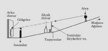
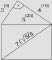
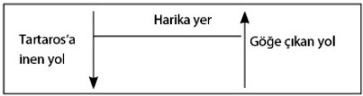
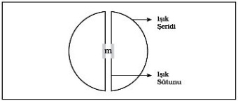

Oranlar AB : BC = AC : CE (aynı şekilde)
CD : DE = AC : CE
AC, görülebilirin dünyasını kapsıyor; çeviride buna “bölümler” dedik; öteki kısımlara da “parçalar” dedik. AB parçası, gölge ve yansımaları kapsıyor; ötekisi (BC), duyu dünyasının nesnelerini. İkinci bölümde, bilinebilirin dünyasında CD parçası, matematiksel formlara tekabül ediyor; ötekisi (DE) ise İdealar dünyasına. Bilgi teorisine bağlanmış bu bölüm, V. Kitap’ın 20. bölümünde anlattıklarını derinleştiriyor. Hatırlayacak olursak orada tek tek nesnelerin (şeylerin) dünyası ve bunlara karşılık gelen bilgi biçimi de zorlama bir çeviriyle “sanma” (öyle olduğunu düşünme, kanaat) olarak yorumlanmıştı. Bu bilgi biçimi salt varlık ile oluş halinin ortasına, bilme ile bilmeme arasına yerleştirilmişti. Burada ise varolmama ve bilmeme dikkate alınmıyor; çünkü bunların ikisi de asıl hayat için çok az bir anlam ve önem taşıyor (Platon’a göre). Buna karşılık burada 4 varlık (oluş-hali) biçimine 4 bilgi biçimi tekabül ediyor; bunlardan her biri, bir önceki biçime bölünüyor. “Sanı”, “umma” (ihtimal verme) biçimiyle asıl “sanı’ya” bölünürken, “öğrenme” de derin düşünme, tefekkür hali diyebileceğimiz zihin faaliyetiyle (biz buna “kafa yorma” diyebiliriz) düşünme ve öğrenme faaliyetinden oluşuyor. Bilgi’nin bu biçimlerini çeviri üzerinden terimleştirmek imkânsız gibi, bunu yapabilmek için zihinsel faaliyetin kavramlarını, özel bir çalışmayla sırf bu metin bağlamında, üzerinde uzlaşarak terimleştirmek gerekiyor. Bu da herhalde çevirmenlerden çok “akademik” ekiplerin işi olsa gerekir. Dolayısıyla okur burada Platon’un, gölge dünya ile duyumlar dünyası bölünmelerini, belli nesnelere belli bilgi biçimleri ayırma kaygısının varlığını “fark etsin” yeter, diye düşünebiliriz. Platon’un öğrenme evreninin şemasını biraz daha netleştirmeye çalışalım: Gölge görüntüleri üzerinde dış dünyanın nesneleri yer alır; onların üzerinde de matematiksel-geometrik biçimler; bunların üzerinde de İdealar. Biz modern insanlar için matematik en açık seçik ve kesin bilimsel güvenirlik dünyasını temsil ettiği için Platon’un bu hiyerarşisi bize şaşırtıcı gelebilir. Platon için değer kavramları, kesin ve analitik bilimlerin (bilginin) daha üstünde yer almaktaydı. Ayrıca Platon’da varlığın biçimleriyle bilgi’nin biçimlerini, ufki (yatay) katmanlar halinde üst üste tasarlaması da yadırgatıcı olmalı; çünkü aralarında bağlantı bulunmuyor. Ne var ki buradan Platon’un, üzerinde İdealar’ın yükseldiği dünyayı ve doğayı tek yanlı olarak küçümsediği sonucunu çıkarmakta acele etmemeliyiz. Platon’un derdi, varlığın basamakları arasına, en üst düzlemde belirlenmiş değerlere göre kesin bir çizgi çekmek, iyi İdea’sıyla en alt, değişen varlık düzlemi arasında kalan basamakları oluşturmaktır. Dolayısıyla bu basamaklara yönelik öğrenme faaliyeti ve onun sonucu olan bilgi de gerçek, hakiki bir bilgiyle varsayımsal bilgi, yani sanı, tahminle umma etkinliği olarak karşımıza çıkıp çeviride büyük kargaşa yaratabilmektedir. Öte yandan Platon, bizim “sanı” (öyle olduğunu düşünme, varsayma, kanaat taşıma) diye karşıladığımız bilgi biçiminin de pratik hayatta pekâlâ güvenilir bilgi sunabileceğini başka yerlerde kabul eder.
[257] V. Kitap’ta da değinildiği gibi, matematik bizim “sanı” diye karşılıklarıyla tanımlamaya çalıştığımız parça ile salt bilgi parçasının ortasında yer almaktadır. Bunun bir nedeni geometricinin, duyumlarla algılanabilir maddi küreyi, tahta küpü (yapıları) araştırmalarında kullanmasıdır. Ne var ki böyle bir çalışma tarzına haklı olarak Sokrates (Platon) itiraz edip, bir geometricinin (matematikçinin) ancak “katısız, salt” kendinde küpü ya da küreyi araştırması gerektiğini, çünkü ancak böylelikle İdealar dünyasına girebileceği, onun düşüncesinin salt bilgiye (soyuta) yönelik olması gerektiğini söylüyor; ama öte yandan bir hatırlatma daha yapıp (matematikçinin/geometricinin) bu genel hipotezlerden (varsayımlardan/önkoşullardan) kopup uzaklaşamayacağını, bunları verili aksiyomlar olarak kullanması gerektiğini belirtiyor. Ayrıca geometrici salt kavramsal olana, nihai olana doğru bu basamakta yol almış olamaz; çünkü küpü, her noktası merkez noktasından eşit uzaklıktaki bir cisim olarak tanımladığında, salt, katıksız mantıksal alana ulaşabilmiş olmam için bu (somut) eşit uzaklıkları değil de (soyut) eşitliği düşünmem gerekir. Matematiksel eşitlik, eşitlik durumlarının sadece özel bir biçimidir çünkü. (Bkz.: E. Hoffmann, Platon’un Mağara Benzetmesinde Pedagojik Düşünce; AGPh içinde, 1931, s. 52). Demek ki matematik kendine ayrılmış araştırma, inceleme mıntıkası içinde kalıp iyi İdea’sının o ilk-başlangıcına ulaşamayıp sadece araştırmada kendine koyduğu hedefe ulaşabilir. İnsanın düşünme ediminin en yüksek biçimi olan diyalektik sanatı ise hipotezleri, sözcüğün gerçek anlamında, en yüksek varlık (olma-hali) biçimine, İdealar’a ulaşmak için kullanır. E. Hoffmann, (Platon, s. 82), bu her iki düşünme basamağı arasındaki farkı bir şemayla belirginleştirmeye çalışmıştır: Diyalektik ve diyanoetik (üzerinde düşünme, kafa yorma, derin düşünme) çıkış noktaları aynı düzlemde bulunan iki basamak olsun, ancak bu düzlem diyanoetik için bir tavanken, diyalektik için bir zemindir. Burada sıkça kullandığımız önkoşulsuz ilk-neden ise Platon için büyük olasılıkla iyi’nin İdea’sıdır.
[258] Burada karşımıza “diyalektiğin gücü” tamlaması çıkıyor. İdelar’ı İdealar ile birlikte arama anlayışıyla da burada ilk kez karşılaşıyoruz. Diyalektik şimdiye kadar “kendi aralarında konuşma” anlamına gelirken, Sokrates tarafından ciddi ciddi bilgiye (kavramaya) yönelik konuşma işlevine dönüşüyor; derin içeriğine kavuşuyor. Böylelikle diyalektik Platon için görünürde bağdaşmaz iki karşıtlığı birleştiriyor: Keskin, en soyut düşünceyle konuşmayı; öteki deyişle kafanın, yalnız, kendi başına faaliyetiyle nihai bilgi’nin kıvılcımından fırlayan şeyi.
[259] İdealar’a geri dönüş. Platon burada diyalektik “Diairesis” (ayrıştırma) yöntemine atıf yapıyor. Verdiği derslerin önemli bir bölümünü oluşturan “diairesis”, Politikos ve Sophistes diyaloglarında önemli bir yer tutar. Düşünür iyi İdeası’nın o en yüksek basamağına ulaştıktan sonra her bir üst kavramı (Platonca söylersek) üst İdea’yı, her bir tür kavramına ayrıştırıp buradan speziel İdealar’a ulaşır; buradan da artık elle tutulur, gözle görülür şeylerin dünyasına geçilir (inilir). Kavram parçalama çalışmasıdır bu ve tanımlar yapma mecburiyetini de getirir. İdea’dan nesneye geçiş köprüsü de bu olmalı. Bu anlayış Akademi için yeni olmalıydı. Glaukon’un cevabından bu çıkıyor.
[260] Matematiğin, görülebilirin dünyasına ait figürlerle (şekillerle) işlem yapmakla birlikte, salt düşüncenin de meselesi olabileceğini kastediyor olmalı.
[261] Daha önce, geometri terimleriyle ilişkin açıklama yaparken, Platon’un terim oluşturma konusundaki isteksizliğine değinmiştik. Buradaki Yunanca διαυια sözcüğü Platon oldukça keyfi kullanıyor; belki de zihinsel faaliyetin sanma ile bilme/kavrama arasındaki konumuna işaret etmek için bir sözcük oyunu da yapmış olabilir. Biz az önce “kafa yorma, tefekkür” anlamına işaret etmiştik. Burada yeri gelmişken bir kez de çeviride başvuru olarak kullanılmak istenilen, dilimizdeki önceki çevirilerin, özellikle bilgi biçimleriyle bunlara karşılık gelen alanlar arasındaki ilişkiyi darmadağınık ettiklerini söyleme hakkını kendimizde bulduğumuzu belirtelim. Bizim zorlama çevirilerle de olsa kollamaya çalıştığımız “terimleştirme” zorunluluğu bir yana, gelişigüzel kavram seçiminin, bu ve benzeri bölümleri anlama imkânını tamamen ortadan kaldırdığı, çeviriden çok, paragraf yorumlarına gidildiği ve sıkça anlama yanlışları ortaya çıktığı için bir ilk çeviri yapma durumu ve güçlüğüyle de baş başa kaldığımızı ve böyle bir metinde bundan ileri gelecek aksaklıkları tartışmaya şimdiden hazır olduğumuzu belirtmek gerek.
[262] Burada ünlü mağara benzetmesi başlıyor. Biz eğretileme, mesel, benzetme kavramlarını kullanabileceğimizi düşünüyoruz. Platon güneş benzetmesini ve orantılı olarak taksim edilmiş çizgi örneğini kullanarak bize burada üçüncü bir benzetme sunuyor ve varlık (olma-hali) öğretisiyle bilgi öğretisini bu benzetmeyle açıklamaya çalışıyor. Güneş, üçe bölünmüş çizgi ve mağara hep birlikte bir bütün halinde bu yeni benzetmeyi oluşturuyorlar. Bu üç parçalı benzetmenin birliği, bilgi ve varlık (olma-hali) basamaklarının dörde bölünmüşlüğüyle sağlanıyor. Burada bir çizimle bu söylediklerimizi biraz anlaşılır kılmaya çalışalım:

İnsanlar sadece çizimde arka duvar olarak belirttiğimiz duvarın üstüne, arkalarındaki alçak duvarın gerisinden, dolayısıyla üzerinden taşan şeylerin gölgelerini görebiliyorlar; gördükleri, oradan geçen insanların taşıdıkları eşya, araç gereç, ama insanların gölgelerini göremiyorlar. Gölgeleri yapan, mağaranın içindeki ateş, daha doğrusu ışık kaynağı. Mağaranın girişine, insanların arkasında kalan, dik, tırmanan bir yol çıkıyor, dışarıda gerçek toprak ile gerçek ışık kaynağı, yani güneş bulunmakta. Burada dikkat edilmesi gereken nokta, arkası ateşe dönük, zincirlenmiş insanların, önlerine düşen arka duvarda nesnelerin gölgelerini görürlerken, onları taşıyan hayvan ve insanların gölgelerini görmemeleri, çünkü taşıyanlar arkalarındaki alçak duvarın arkasında kalıyor. Ama bu eğretilemeyi ya da öteki deyişle benzetmeyi iyice kavrayınca bu düzenlemenin de anlaşılmayan bir yanı kalmıyor. Platon bize [517a’da] mağara benzetmesinin, bilgi’nin çeşitlerini gösterme çabasıyla ilintili olduğunu söyler. Sadece “bilinebilir” dünyadan farklı olarak “görünebilen” dünya, mağaradaki ikamet durumuyla karşılaştırılır; mağaradaki ateş ise dünyayı aydınlatan güneşe karşılık gelmektedir. Mağaradan çıkışa doğru tırmanmak, görünürün dünyasından bilinebilir (düşünülebilir/öğrenilir) dünyaya doğru yükselmek anlamına gelmektedir. Platon çizgi benzetmesinde de [509b] gerek görünür dünyayı gerekse sadece düşünülebilir, öğrenilebilir olan dünyayı kendi içinde ikiye böler, böylece ortaya dört parça çıkar. Bu bölme burada da geçerlidir, ama öyle fazla açık seçik işlenmemiştir. Görünür dünyada nesneler ve gölgeleri olduğu gibi, mağarada da gölgeler ve onların kaynağı bulunmaktadır; bunlar görüntü (resim), heykel, şekil olarak duvarın arkasında yükselirler. Ama mağaradakiler, arkaları dönük olduğu için alçak duvardan taşmış bu şekilleri de göremezler. Öyleyse, gölgelerin kaynağı olan, ama kendileri de asli, orijinal olmayan bu şeyler, gölgelere göre, bir üst basamaktaki varlık (olmakta-olan) halini, yani dünyadaki değişken varoluşu temsil ederler. Ama işte, arkası dönük insanların baktıkları arka duvar üzerinde gölgeyi yapanlar sadece yapay nesnelerdir, çünkü bunların ilk imgeleri (arketipleri), şeylerin kendileri, bunlardan iki basamak daha yüksek bir varlığa sahip olmak zorundadırlar; dolayısıyla da gölgeleriyle birlikte, İdealar ile ve onların gölgeleriyle, matematiksel oluşumlara benzemeleri gerekir. Dış dünyanın bu nesneleri arasında yıldızlar da yer alır; bu nesneler, gölgeleri ve (sudaki) ters yansımalarıyla farklı türden iki öbek olarak karşı karşıya konmuşlardır. Kuşkusuz bu dünyanın içinde parlaklığı farklı olan şeyler de vardır, ancak bu türden kademeler İdealar dünyasında da bulunmaktadır. İdealar’ın en tepesinde ise tıpkı dünyamızın üzerinde güneşin yer alması gibi, iyi İdea’sı bulunur. Şimdi bu söylenenleri şöyle şematize etmeye çalışalım:
| Güneş benzetmesi | Çizgi | Mağara eğretilemesi | ||
| Güneşin ülkesi | Görünen dünya | Gölgeler kopyalar nesneler |
Ateşin ülkesi |
Yapay nesnelerin gölgeleri Yapay nesneler Nesnelerin gölgeleri ve kopyaları Nesneler |
| İyi İdeası’nın ülkesi | Düşünülebilir dünya: | Matematiksel cisimler | Güneş’in ülkesi | |
| İdealar | ||||
Platon bize, daha yolun başında, bu benzetmelerle birlikte aydın, eğitilmiş kimseyle tersi arasındaki yaşama farkını da göstermeye çalışıyor; bu fark, dünya görüşleri ve hayata bakış arasındaki farka karşılık gelmektedir; dolayısıyla da ne yapılırsa yapılsın, gerektiği gibi canlandırmak, anlatmak kolay değildir. Bu demektir ki, burada kullandığı mağara benzetmesinin, kuru, ama katı ve sert bir benzetme karakteri taşıması da anlaşılır olmaktadır. Işık sadece mağaranın tek bir yanına düşmektedir burada. Aynı konuda Phaidon ve Phaidros’ta çok daha aydınlık bir ışık söz konusudur. Bu konuda bkz. Platon’un Mağara Benzetmesinde Zor Açıklanabilir Bir Bölüm Üzerine, O. Becker RhM.’de, 99, 1956, s. 201-205. Platon’un düşüncelerini tanıtırken dikkat ettiği gelişmeyi göz önünde bulunduracak olursak, bu mağara benzetmesinde Platon’un ne kadar sanatkârca kaygılar taşıdığını kavrayabiliriz. Üç kez aşağıdan yukarıya giden ve tekrar geri getiren yola dikkatimizi çeker Platon:
Parag. 1-2: Mağaradan ışığa tırmanma, geri dönme.
Parag. 3: Görünür şeylerin dünyasından düşünülebilir şeylerin dünyasına tırmanma ve dönüş yorumu.
Parag. 6-15: Jimnastikten, ön hazırlık olan bilimler üzerinden diyalektiğe yükselme ve geri dönüp devlet adamı olarak faal olma.
Aynen böyle, filozofun hayatı da bir döngü içinde gerçekleşir. (Parag. 16-18), mağara basamağından güneş basamağına, İdealar öğretisine doğru yükselen filozof, tekrar geriye, dünyevi hayatın içine, devlet işlerine döner.
Ancak bütün bu eğretilemeyi taşıyan temel düşünce, pedagojik bir kaygıyla belirlenmiştir. Bilimler zahmetle yürünecek bir yolun evrelerini oluşturur; bu yolu aşıp geri dönecek kimse için eğitim vermek en yüce amacı temsil edecektir. Bilimleri öğrenme yolu dik ve zahmetlidir, acı verir, yakınıp durur kişi. Bilim öğrenme, kişinin doğal tensel hazlarına sırt çevirmesini gerektirir; ama işte bilim sonunda insanları zincirlerinden kurtarır, alıp düşüncelerin özgün âlemine götürür, tenseli aşan bakışlarla dünyayı anlamasını sağlar ve metafiziksel bir bilinçle hayat yolunda ilerlemenin önünü açar. Bilimin bu yolundan geçmiş olan, mağaranın bir mezar olduğunu anlar. Demek ki insanın hayatı ancak bilimsel bilgiyle donandığında gerçekten yaşamaya değer hale gelir. (E. Hoffmann, Platon’un Mağara Benzetmesindeki Pedagojik Düşünce, AGPh. 40, 1931, s. 57).
[263] Platon kendi benzetmesinin çözümünü de sunuyor burada; akıl (ruh), deneyimler dünyasından yukarıya doğru en yüce (yüksek) varlığın (olma-halinin) bilgisine doğru hareket ediyor; tek’ten genele, bütüne, somuttan soyuta giden bir yol bu, sahici, asıl varolma (olma-hali) sadece soyut olanın özelliği olarak beliriyor.
[264] Metnin en derin ve gerçekliğe en yakın yerlerinden biri. Sahici Paideia (eğitim, öğrenme), insanı biçimlendirecek bir etmen olarak malumatın (bilginin) üst üste yığılması ve alt alta toplanmasından çok başka bir şeydir. İnsanı bir bütün olarak başka bir yöne çevirme; belli bir yoldan geri döndürme, ruhu belli bir yöne çevirip yönlendirmektir eğitim. Bu yönünü; değiştirme, çevirme, geri döndürme kavramlarının anlamını yakaladıkça, Platon’un ileriki bölümlerde insanın bir bütün olarak yaşaması gereken dönüşüme niçin o kadar önem verdiğini de kavrarız. İnsanı, özünün de ötesine geçerek irrasyonel (akılötesi) derinliklerde kavramaya yönelik bu dönüşüm, bu dönme eylemine, Hıristiyanlığın din olarak kabul etme anlayışı da dayanacaktır ileride. Çünkü Hıristiyanlığa “geçmek de” bir dönüşüm yaşamaktır o kavrayışta. İnsan böyle bir dönüşüm yaşayacak veri ve gücü yaradılıştan içinde taşıdığı için, bir bakıma insanın kendi kaderini tayin edip kendi ellerine alması anlamına da gelmektedir bu yaşantı. Bu dönüşümü yaşayan insan İdealar dünyasının sahici değerlerini kavrayıp duyular dünyasının önemsiz etkilerini bir yana bırakacaktır.
[265] Platon burada insanın doğuştan getirdiği düşünme yetisini başlangıçta ruhun içinde yer almayıp alışkanlık ve alıştırma yoluyla kazanılan öteki yeteneklerden ve “erdemlerden” ayrı tutuyor. Bedenin yetenekleri olan beceriklilik, ustalık vb.’nin yanı sıra ruhun becerileri olarak sayılabilecek olanlar da öğrenilebilir. Bunlar adaletli, ölçülü olmaya bağlı erdemlerdir, ama ruhun edindiği bu tür beceriler toplumsal hayata yönelik yüzeysel beceriler, erdemlerdir. Elde edilmiş, üzerlerinde fazla durulup soru sorulmayan yaşama alışkanlıklarıdır bunlar, dolayısıyla da hesabını vermek kişiye düşmez. Aristoteles de erdeme yönelik bu anlayışı kullanır, ama ulaştığı sonuç Platon’unkinden farklıdır. Aristoteles için töreselliğin ve anlama yetisinin (aklın) erdemleri olmak üzere iki öbek erdem bulunmaktadır (Dianoetik ve ethik). Aklın, anlama yetisinin erdemleri arasında bilim (bilgi), kavrama yetisi ve hayata yönelik zekâ (akıllılık) yer alır, öteki öbekte ise özgürlük aşkı, ölçülülük yer alır; hiçbir erdem, Aristoteles’e göre doğuştan gelmez; dianoetik erdemler, kişinin verilere sahip olması durumunda, öğrenme yoluyla, ikinciler ise alışkanlıkla elde edilir.
[266] Beden ruhu, deneyimlerin dünyasına; aşağıya çeker. Bedensel olanı ağırlık, baskı yapan, çekime boyun eğen, görünür bir şey olarak tasarlamak gerekir. Ancak bu açıklamalar Platon’un keşişçe bir anlayışla bedeni hiçe saydığı yanılgısına götürmemeli bizi. Hıristiyanlığın keşişçe yaşama alışkanlığını çağrıştıran bu sözler, bedenin ruhu kurşun gibi yere çektiği yorumu, Platon’un bedenin ve dünyanın güzelliğine ilişkin Yunan’a özgü o anlayışı paylaştığını bildiğimiz ölçüde ortadan kalkacaktır. Eti, bedeni renksiz, değersiz bir şey saymak ise ne Platon, ne Sokrates, ne de dönemin öteki simaları için söz konusudur. X. Kitap’ın sonunda, felsefe müridi genç oğlanlarla ilgili bölümde bu bedensel güzelliğe düşkünlük, belirgin bir biçimde karşımıza çıkacaktır.
[267] Platon burada mağara benzetmesinden çıkabilecek sonuçları bütün kesinliğiyle gözlerimiz önüne seriyor; pratik devlet adamını reddederken felsefecilere yönelik taleplerini de belirgin bir biçimde ortaya koyuyor. Pratik devlet adamlarını kabul etmiyor, çünkü bunlar dünyanın nihai verilerini kavrayamadıkları için, değişik durumları anlayamayıp kendilerine bir hedef koyamazlar; ama filozofları da pratik hayatın içine davet edip sadece felsefeci olmanın işe yaramazlığını hatırlatır. Filozof için de pratik hayatın acemisi olma ve bir işe yaramama suçlamaları pek de yersiz değildir. Pratik, gerçek hayat ile felsefe hayatı arasındaki bu gerilimde, Platon ustanın kişisel trajedisini de yakalamak zor olmasa gerekir. Bahtiyarların adası üzerindeki mutlu bilgin hayatı ifadesi de bu trajiği gizlemiyor. Oysa ileride Aristoteles, bu trajik gerilimi hiç yaşamadan böyle bir felsefe, bilgin hayatının tadını çıkarmayı ister, bağımsızlık, boş zaman, her türlü rahatsız edici etmenden uzak olma özgürlüğü, bütün bir hayat boyu sürebilirse o kişi mutlu demektir. Aristoteles için pratik hayatın mutluluğu ise ikinci planda kalır.
[268] Yunan çocukları oyun oynarken bir yüzü beyaz, ötekisi siyah bir disk atarlar ve “gece-gündüz” adı verilen bir oyun oynarlardı. Bir disk fırlatıldıktan sonra tesadüfen bu iki yüzden birinin üste gelmesine göre gece ya da gündüz ortaya çıkardı. Platon, buradaki tesadüfün karşısına, yetiştirilmekte olan bir gencin ruhunda gece ile gündüzün yer değiştirmesinin ne kadar yavaş ve zor gerçekleştiği düşüncesini koyuyor.
[269] Palemedos, Truva Savaşı’na katılmış bilge bir Yunanlı’dır. Efsaneye göre harfleri ve hesap yapmayı keşfeden kişidir. Truva önünde ihanet gerekçesiyle mahkûm edilmiştir. Her üç büyük tragedya yazarı da bu konuyu işlemiştir, ama bunlar günümüze ulaşmamıştır.
[270] En başta komutanların savaş pratiği bakımından, Helenistik dönemde büyük önem verilen matematik, ayrıca genel eğitimin aracı olarak da önemseniyor. Bu değerlendirmenin arkasında, o dönemlere hâkim ve oldukça ilkel bir anlayış yatıyor: Matematik, insanı hayvandan ayıran temel farkların başında gelir. (Üçe kadar saymamak.) Ancak pratiğin ötesinde, matematik daha yüksek bir anlamda, kavramsala, Platoncu anlamda olma-haline (varlığa) yaklaşan düşüncenin eğitim aracı, en yakın desteğidir. Matematiği okul eğitimine sokanlar Sofistlerdi; somut pratik nedenlerin yanı sıra zihinsel eğitimin biçimsel ihtiyaçları (soyut düşünme gibi) bu girişimde rol oynamış olabilir. Platon daha çok zihinsel eğitimle ilintili olarak önemsiyor matematiği [526b]. Ayrıca sonraki yapıtı Yasalar’da matematik konusundaki şu görüşlerini aktarmak yerinde olacaktır: “Bir tanrıya benzemekten çok çok uzak, biri, ikiyi ve üçü ya da doğru ile eğri (çizgiyi) tanıyamayan ve sayılar öğretisinden habersiz, ne günü ne geceyi hesaplayabilen, Ay’ın, yıldızların ve öteki gök cisimlerinin (Dünya’nın) çevresinde dönme süreleri hakkında deneyimi bulunmayan insan.” [818c].
[271] Platon’a göre, algılarımızdaki belli başlı çelişkilerin farkında olduğumuzdan, düşüncemizi buradan harekete geçirerek bu çelişkileri anlamaya çalışmalıyız; bu da bizi zaten felsefeye götüren yolun başı gibi bir şeydir. Platon parmak örneğini vererek ne demek istediğini açmaya çalışıyor. Parmağı parmak olarak algılama bize bir çelişki sunmaz, parmak herkes için parmaktır. Farklılık, parmağın o asıl, öz varlığına bağlanmış öteki özelliklerle birlikte ortaya çıkar: Büyüklük, uzunluk, kısalık, konum, ısı vb. gibi. Bu düzlemde parmak öteki parmaklara ve nesnelere göre (benzer ya da farklı) birçok özellik gösterecektir. İşte anlama yetisi (akıl), bu çelişkileri çözmek için devreye girer. Girince de duyu algılarının (bilgisinin) göreceliği ortaya çıkar. Bu sorunla ilgili olarak özellikle Phaidon diyaloğuna bakılabilir.
[272] “Bir” sayısı “çokluk” karşısında yer aldığı ve ancak “çokluk”tan yola çıkarak kavranabileceği için düşünceyi harekete geçirir. Dolayısıyla da felsefi bir bilimin öğesi olur.
[273] Bu oldukça karışık tek’lik, bir’lik, çok’luk ilişkisini biraz daha iyi anlamak için Platon’un 3 birimi (tek’liği) birbirinden ayırt ettiğini bilmeliyiz: İdea’nın tek’liği bir kezliktir, matematiksel ve görünebilir tek’lik ise sonsuz çokluktadır. İdea tek’likleri aynı, eşit ve bölünmezken, ötekiler bölünebilir; eşit de değillerdir.
[274] Platon burada dönemin geometricilerini eleştirmekten çok, onların biliminin türünü ya da tarzını hedef alıyor gibi. Geometri fazlasıyla görünen nesneye ya da modele bağlı kalmakta, (işlemlerle) ortaya çıkan yeni figürün de öteki parçaların konstrüksiyonuyla oluştuğunu ileri sürmektedir; oysa Platon için geometrinin kurguladığı şey, İdea içinde varolanın gerçekleştirilmesinden başka bir şey değildir; (ruh/zihin) bu biçime bir bütün olarak bakmıştır (zaten).
[275] Burada da çevirinin duvara çarptığı bir noktadayız; geometri işlemlerini bize pek yabancı olmayan terimlerle vermek zorunda kaldık, ama Platon’un eleştirisi bu durumda pek anlaşılmıyor; oysa Platon, Yunanca terimlerde, geometrinin aslında soyut, iyice biçimsel olanı, duyum algılarına verili somutluklar gibi gösteren terimler kullanmasını eleştiriyor. Bu terimlerin Yunancalarını bugünün diline aktarmak, dolayısıyla çeviri pratiğine ve mantığına aykırı olacaktır. Soyut işlemleri, somut faaliyetler gibi söylemleştirme suçlamasıyla karşı karşıya olduğumuzu bilmek yetecektir. Biz “karesini almak” diye çevirdik, örneğin bunu “dört köşeli yapmak” olarak çevirdiğimizi varsayarsak, somut ile soyut arasındaki buluşmayı daha iyi kavrarız. Ancak Platon’un bu bilime haksızlık yaptığını da düşünmek mümkün, çünkü her bilim başlangıç aşamasında kullandığı kavram ve terimleri uzun yıllar sonunda, o başlangıç hataları ve kısıtlılık durumundan sıyırıp kendi amaçlarına uygun hale getirecektir. Öte yandan burada “bilim dili” sorununun karşımıza çıktığını da unutmamalıyız. Aynı ilişki bugün örneğin evrim üzerine konuşurken de bizi zorlamaktadır: “Evrim şuna karar vermiştir, bu yolu seçmiştir” gibi ifadelerle “evrimi” aktif özne gibi kullanmaktan ve faaliyetleri, süreçleri akıllı bir özneye atfedebileceğimiz “kavramlarla” vermekten başka çare henüz bulamıyoruz.
[276] Sokrates, astronomiyi az önce sadece insanlara yararları bakımından değerlendiren Glaukon ile Atina tarzına uygun oynuyor. Kitlenin tamamen pratik-bencil ve yararcı zihniyete dayalı okul ve eğitim anlayışıyla Platon’un ideal eğitim anlayışı arasındaki karşıtlık, hele günümüzde iyice alevlenen ve eğitimin evrensel sorununa dönüşme eğilimi gösteren bir gelişmenin ilk örneği. Bugün düşünce, felsefe, kültür bilimleri dediğimiz öğrenim ve eğitim kolları neredeyse kapanmak üzere. Pratik-real işlemlere endeksli öğrenime yönelik değerlendirme ise Platon düzeyinde bile değil ne yazık ki henüz!
[277] Burada Platon, o zamanlar henüz geometri dalı içinde yer almadığı belli olan stereometri’nin eksikliğinden yakınıyor. Pythagorascılar cisimlerle uğraşmaya başlamışlardı, ama henüz bilimsel bir çalışmadan söz etmek mümkün değildi; stereometri’yi Antik geleneğe göre kuran, İÖ 369’da ölen Theaitetos’tu. Platon onun anısını, adını verdiği Diyalog’da yaşatmıştır. Bilimsel bir stereometri dersini ilk kez Platon Akademisi’nin yaptığı söylenmekte, dahası “küp şeklinin kare sorununu” Platon’un çözdüğü ileri sürülmektedir. Ama doğrulanmış bir bilgi değildir bu.
[278] Biraz dikkatle bu tartışmayı izlersek, bugün bize çok tuhaf gelecek bir taleple karşı karşıya kaldığımızı görürüz: Platon, astronomiyi, görünen gök cisimlerini incelemeyi bir yana bırakarak soyuta yönelmeye çağırıyor! Bunu yaparken Pythagorascıların bu konuda öğretisine sırt vermiş oluyor; berikiler gök cisimlerinin küresel biçimde oldukları öğretisine, onları gözlemleme yoluyla ulaşmamış, gök cisimlerinin en mükemmel biçime sahip olması gerektiği ve bu biçimin de küre olduğu anlayışıyla bu sonuca varmışlardı. W. Schadewaldt’ın bu konuda bir ihtimale daha işaret ettiğini hatırlatalım: Schadewaldt, Platon’un burada dostu Knidoslu Eudoxos’un astronomi çalışmalarına atıf yapmış olma ihtimali üzerinde duruyor. Eudoxos, her bir gök cismine isim vererek bunları birbirinden ayırt etmiş, bu ayrım Aratos’un şiirlerine geçmiş, bunların Latinceye çevirisi sayesinde de günümüze kadar uzanagelmiş ve gezegenlere verilen adları belirlemiştir; Eudoxos ayrıca gezegenlerin görünürdeki düzensiz hareketlerinin aslında dairesel olduğunu ve belli yasalara boyun eğdiğini ileri sürerek Platon için çok önemli bir anlayışın kanıtını da sunmuş oluyordu: Evrensel yasalara bağlı hakiki (gerçek) kozmosla karşı karşıya olduğu anlayışının (W. Schadewaldt, Knidoslu Eudoxos ve Kendileri Hareket Etmeyen Hareket Ettiriciler Öğretisi, Satura içinde, 1952, Baden Baden).
[279] Sanatkârca zanaatların bulucusu olarak kabul edilir.
[280] Platon, Yasalar, 893b ve ötesinde önce 8 hareket biçimini birbirinden ayırt eder: Dairesel, düz gelişen (kendi tahrik gücüyle ya da dıştan tahrik gücüyle) çarpışma (bölünme ya da birbirine karışma); büyüme ve azalma; doğma ve yok olma; bunlara iki ayrı öbekteki hareket biçimi eklenir, birincisi kendiliklerinden hareket eden şeylerin hareketi, ikincisi kendini ve öteki cisimleri hareket ettiren şeylerin hareketi.
[281] Küçük interval, seslerin yoğunlaştığı noktalar. Yunanlılar için küçük interval, 1/4’lük notaydı (sesti); Platon burada müzik araştırması yapan ve salt pratik ayağında takılıp kalanları alaya alıyor; intervallerin (dörtlük seslerin) gerisindeki sayısal ilişkiyi araştıranları daha yüksek bir noktaya koyuyor, ama kendisi çok daha teorik bir müzik araştırmasından yana; böyle bir araştırma pratikte takılıp kalmak yerine harmoninin (ses uyumunun) gerisindeki yasaları araştırmalı, bu yasalara göre de müzik pratiğine ilkeler getirmelidir. Müzik araştırması ancak böylelikle bizi diyalektiğe götürür.
[282] Platon burada basit sözler kullanarak bir yöntem olarak diyalektiğin tanımını yapıyor. Diyalektik, karşılıklı soru ve cevaplarla bilgi’nin sınanmasıdır ve Sokrates’in metodundan türetilmiştir. Diyalektiğin hedefi, “yanıltıcı”, görünüşe kilitlenmiş algılardan mümkün olduğunca arınarak İdealar bilgisine, dolayısıyla da (bizim anlayışımıza göre) “kavrama” ulaşmaktır. Öyleyse diyalektik bir tür ‘iyi dağının’ tepesine tırmanma yolculuğudur. Araçları sayıca kısıtlıdır ve görünüşte cılız, kıt birkaç kavramdan ibaret bir dağarcığı vardır; bunlar da tanımlama, kavramların bölünmesi, birbirine bağlanması (yargılar, sonuç türetmeler) kavram ayrıştırmaları [dihairesis, 511b], kısacası biçimsel mantıktır ya da biçimsel mantığın operasyon araçlarıdır. Ancak tanımlamanın asıl hedefinin etik değer kavramlarına ulaşmak olduğunu gözden kaçırmamak gerekir. Platon salt akıl yürütmeyle de olsa sonuçta pratik hayatın önüne örnek alınabilecek etik, içerikçe zengin bir hedef koymaya çalışmaktadır. Ama öte yandan Platon, öyle salt akıl yürütmeyle ulaşılacak bilgi’nin sınırlılığının da farkındaydı: Salt akıl yürütmenin, soyut bilgi’nin önünde, bütün manevi, zihinsel hayatın en yüksek basamağı olarak “bakma” basamağı yer alır dolayısıyla. Bakma, ani bir ışık patlaması gibi düşünüre armağan eder kendini. Demek ki Platon ne katıksız bir mistik düşünür ne de rasyonalist, yani akılcıdır; insanın bu her iki gücünü de birleştirmeye çalışmaktadır. Dolayısıyla diyalektik, bir yaşama tarzını ifade eder; bu tarzın ilk buyruğu, iyi’nin dağına tırmanıp İdea’ya (kavrama) “bakma” çabasını sonuna kadar sürdürmektir. Hiç geri alınmayan bir taleptir bu. Böylelikle bu aşamada felsefe hakiki bir “dine”, bir hayat yönlendirici inanca dönüşür [539e]. Gene de bütün bu açıklama ve bilgilerin ışığında, Platon döneminde, Akademi’nin, “bakma” hedefli kavrayışa yönelip pratik/ampirik bilgileri (bilimleri) önemsemediği yanılgısına düşmemeliyiz. Özellikle doğabilimleri alanında gözlem ve incelemeye verilen önem, ileride Aristoteles’te ortaya çıkan bilimin organizasyonu düşüncesinde kendini gösterir.
[283] Platon burada tanrısal yaratının ürünü olduğu için imgelerin (görüntülerin) tanrısallığından söz ediyor olabilir. Platon ayrıca gerçek güneşin ışığında gölgeleri oluşan gerçek şeylere, mağaradaki ateşin ışığında oluşan imgelere (yansılara) bakmak’tan daha fazla değer veriyor gibi.
[284] Varolma-hali (varlık) dünyasının en iyi bölümü, ifadesi Şölen’de de karşımıza çıkıyor. Orada, hakiki Eros’un yoludur bu ve kendine (asıl) güzelin seyrine (ona bakmaya) götüren yoldur. Platon, insanın özünü temelden belirleyici bu hedefi ilk kez gençlik diyaloğu Lysis’te hafifçe duyurur bize; orada, “dostluk” kavramının karşısında Eros’un yüce bir değere ulaşma isteği karşılık gelir. Dolayısıyla Lysis, Şölen ve Devlet, insanın özünün temelindeki belirleyiciliği ve hayatın görevini (iyiye bakma), birbirini tamamlayarak açıklayan üç diyalog olma özelliği taşır.
[285] Sokrates’in hemen bir sonraki sözlerine dikkat etmek gerekiyor [bkz. 509d]. Platon burada matematik bilimlerini vb. hakikate ulaşmada diyalektiğin dışında tutuyor. Çünkü onların tartışılır önkoşulları varken, ona göre, bir tek diyalektik tartışılmaz, önkoşulsuz “bilimdir”. Burada bir çeviri zorluğu var. Yunanca διαυοια sözcüğü çeviride de güçlükler çıkaran bir sözcük. Sadece düşünme edimi, kafa patlatma, üzerinde düşünme anlamlarına gelmeyip aynı zamanda faaliyet ile sonucunu da içeren bir sözcük. ‘Henüz bilim-olmayan’, ‘üst-sanat’ gibi bir sözcük uydurmayı gerektiriyor.
[286] Okur burada, düşünme, zihin faaliyetleri biçiminin sınıflandırılması konusunda bir kez daha sapın samanın birbirine karıştığı zorlama bir çeviri bölümüyle karşı karşıya olduğu izlenimini edinecektir haklı olarak. Bir kere, varlık (olma-hali) ile olmakta-olan (henüz tamamlanmamış, süreç içinde yol alan, dolayısıyla değişen) arasındaki ilişki, sadece bu metni değil, bütün felsefe çevirilerini zorlayıp durmaktadır. Salt varlık (olma-hali) ile dünyada, fenomenleşmişlik olma sürecini gerçekleştirme durumunu birbirinden dilimizde ayırmak için yeterli felsefe geleneğine sahip olmadığımızı, bu yüzden de zorlandığımızı söylemek, birikimlerimize haksızlık etmek anlamına gelmez herhalde. Kaldı ki “varlık” (olma-hali), varolma, varolmakta-olma durumuyla giderek varoluş (existenz), bizzat Batı kültüründeki (felsefecilere ait olmayan) kimi metinlerde de birbirine karışıp düşünceyi izleme zorlukları çıkartmaktadır. Platon salt olma-hali’ni, salt varlığı, o olma sürecine girmiş, değişip duran oluş-hali’nden, olma potansiyeli gibi bir asıl varlık ile varoluşu ayırırken, çeviride sınırı kollamakta zorlanabiliyorsunuz. Ancak düşünce, sanı (varsayma), (öyle olduğunu) umma, inanma vb. zihinsel-psikolojik faaliyetleri “kavramlaştırma” konusunda baştan beri daha çok “yorumlayıcı bir çeviri” yapma zorunluluğu doğdu. Sonuçta diyalektiği, kavramsal kesinlik olarak tanımlayan Platon’un, kavramlar arasına sınır çekme ve bunların birbirleriyle ilişkisini belirleme çabasını az çok yansıtabilmiş olduğumuzu düşünüyoruz! Tamamen öneri ve metni işletmeye yönelik bu çeviriler bir iddia taşımamakta, bir arayışa işaret etmektedir.
[287] Kuşkusuz burada kasıtlı yanlış, yanılgı, yanıltma konusunda söylenenler epey kafa karıştırıcı. Platon’un yaşlılık dönemine doğru temiz, saf kan konusundaki görüşleri burada iyice derinleşmiş halde karşımıza çıkıyor ve manevi-zihinsel, ahlaki düzleme yansıyor. Bu kasıtlı yanıltma konusunda [382a]’ya ilişkin açıklamaya da bakabilirsiniz. Platon burada kasıtlı yanılgıyı, cehaletten, bilgisizlikten ileri gelenden ayırt ederken Yunanca hem “yalan” hem de “cahillik, bilgisizlik” anlamına gelen bir kavram kullanıyor (ψενδοζ). Şaşırtıcı olan, kasıtlı yanılgıyı (yanıltmayı) yermezken, öteki cehaletten, bilgisizlikten ileri geleni sertçe eleştirmesi. Ancak farkına varılmış, öğrenilmiş hakikatlerden bile bile sapıp, daha üst düzeydeki hedeflere yönelmeyi kastettiği ölçüde, kasıtlı yanılgıyı elbette yeğliyor. Özellikle bu ince fark algılanmadığı yerde çevirilerde tam tersi anlam çıkabiliyor. Devlet adamı, yüksek amaçlar uğruna, elbette kasıtlı yalan söyleyecek, yanıltacaktır.
[288] Sokrates burada nazik bilimsel konuşmayla kent ağzı arasındaki farklılığı hatırlatıyor gibi. Birkaç kez kullandığı “piç” kavramını kastediyor olmalı, yoksa felsefeye saygısızlıklar konusunda ödünsüz.
[289] Platon [412’de ve sonra] yönetici olmak üzere seçilmesi gereken bekçiler konusuna geri dönüyor. Orada, böyle bir kimsenin hükümlerinde kararlı ve cesur olma özelliği aranmaktaydı. Şimdi “güzellik” özelliği de aranan özellikler arasında ikinci sıraya yerleşiyor. Yunan sosyal dünyasında her Yunanlı eğitici için, eğittiği gençlerin güzel olması şartının ne kadar doğal bir talep olduğunu gene de pek açık dile getirmiyor; ancak [402d]’de ruhun güzelliğiyle ahenk içinde olması gereken güzel biçimden (bedenden) söz ederken bu ilişkiye de değiniyor. [494c]’de ise güzellik ideal tip ile birlikte aranan özellik olarak karşımıza çıkmamıştı. Platon’un Sokrates’in ağzından sunduğu bu sözlerde, hakiki Yunan duygusunun ve hayat karşısındaki anlayışın önemli bir ayağı ortaya çıkmış oluyor: Eğiticiler ile eğitilen gençler arasındaki ilişkinin çok olağan bir boyutu. Üstelik güzel mürid arama talebinin çok çirkin bir adam olduğu bilinen Sokrates tarafından ileri sürülmesi de düşündürücü olmalı! Öte yandan burada bekçilerin en üst sınıfı söz konusu olduğu için bu açıklamalar VI. Kitap’ta [485a]’nın başlangıcına da bağlanıyor ve orada, filozoflara yöneltilen talebi kısaca toparlamış oluyor. Ancak VI. Kitap’ın sonu ve VII. Kitap’ın başlangıcında hakiki varlığın enikonu açıklanmış olması nedeniyle okur bu yeni bilgilerin ışığında burada iyice derinleşmiş açıklamalarla karşılaşabiliyor. Artık seçip ayıklamanın nihai amacını ve felsefenin gerçek hedefini öğrenmiş bulunuyoruz. Bu yeni aşamada öze, asıl olana ‘bakma’ söz konusudur. Öte yandan ilk bekçi seçimi sırasında aranan özellikler, henüz tasarım halindeki ve yavaş yavaş geliştirilen bir ideal devlet kurmacasına göre belirlenmişlerdi. Şimdi ise (tasarımda da olsa) enikonu tamamlanmış bir devlet var karşımızda. Giriş’te de belirttiğimiz gibi bu farklılığa bakıp Politeia metninin bölümlerinin birbirinden çok farklı dönemlerde yazıldığı sonucunu çıkartamayız buradan. Bunun en iyi cevabını Platon Yasalar’da veriyor. Orada [751 ve sonrası] henüz öncesi olmayan bir süreçte, devlet için bekçileri, yöneticileri seçmenin güçlüklerine işaret edip en azından, başlangıçta en deneyimli kimseleri işin başına getirdikten sonra, ideal devlet bir kez işlemeye başlayınca, bundan böyle eğitimi de yeni yasalarla düzenleyerek sorunu ortadan kaldırma düşüncesini ortaya atıyor.
[290] Solon (İÖ 630-560): Atinalı devlet adamı ve şair. Eski Yunan’ın Yedi Bilgesi’nden biri olarak kabul edilir.
[291] Diyalektiğin bu eğitiminde henüz en üst basamak, yani iyi İdea’sına bakma düzlemi eksiktir. Buradaki tasarımı kendi yüksek eğitimimizle karşılaştırarak biraz daha iyi kavrayabiliriz. Orada yaklaşık 20-30 yaş arasında görülen önlisans gibi kabul edebileceğimiz eğitime, modern dünyada genellikle 18-20 yaşında başlanıyor. Diyalektiğe yönelik son eğitim (öğrenim) aşaması ise 50 yaş. Arada 20 küsur yıl var. Ancak Platon’un okulunun, teoriyle pratiği uyumlu bir biçimde birleştiren, bütün bir hayatı kapsayan bir eğitim/öğrenim olduğunu daha önce de hatırlatmıştık. Aristoteles ise Platon “okulunun” basamaklarını doldurmaya çalışır. Kendisi 18 yaş ile 37 yaşı arasında Akademi’nin üyesiyken, pratik hayata adım atmış (İskender’in eğiticisi!) 50 yaşındayken kendi okulunu kurmuştur. Aristoteles okulunda “iyinin bilgisine ulaşmak”, “iyi olmak” ile eşanlamlıdır. Dolayısıyla “iyiyi” tanıma, öğrenme süreci, bir ahlak edinme süreciyle paralel yol alır onun okulunda. Ethos (ahlak), eylem ile sınanmayı gerektirir.
[292] [501a]’da da değinildiği gibi, Platon için 10 yaşındaki çocuk, beyni tertemiz (tabula rasa) olan, eğitilmeye, şekillendirilmeye elverişli bir malzemedir. Yaşlı kimseler ise ruhlarına o kadar bağlanmışlardır ki, artık dönüşüm yaşamaları imkânsızdır. Platon Yasalar’da [735b ve sonrası], buradakinden daha yumuşak bir devlet reformunu betimler; orada arındırma, daha çok sosyal kaygılara göre gerçekleştirilir ve mülksüzler bir koloni olarak “dışarıya” yollanırlar. Değerlendirmelerde Platon’un bu önerisi, “öylesine ortaya atılmış bir fikir” olarak tanımlanmış ve çoğu yorumcu tarafından göz önünde tutulmaması gerektiğine işaret edilmiştir. Hatta, “sahici” olmayan, sonradan ekleme bir talep olduğu yolunda görüşler bile bulunmaktadır (G. Müler, Platon’un Yasalar’ı Üzerine İncelemeler, Münih, 1951). Platon’un akla, mantığa aykırı böyle bir haksızlık zemini üzerinde ideal devletinin kuruluşunu yapmayı düşünmeyeceği tespiti, böyle bir önlemin, mülksüzleri dışlama girişiminin, öteki açıklamalarla da bağdaşmadığı tespitiyle birleşmektedir. Platon’un sözünü ettiği biricik önlem, gerçek filozof kralların yönetime getirilmesidir; ama Platon, bu önlemin de yol açacağı çelişkiden ötürü öyle fazla yüklenmez bu önerisinin üzerine. [473] kitle, fazla tahrik olmamışsa, işler yolundaysa, filozof krallar, toplumu kolayca yönetebileceklerdir, [499] ama onları hiçbir şekilde özgür bir yurttaşta bulunması gereken erdemleri benimseyecek düzleme çıkacak kadar eğitemeyeceklerdir. Platon bundan hiçbir yerde söz etmez, zaten kitlenin eğitim yoluyla dönüştürülmesi gibi bir sorunu da yoktur onun. Ancak kitlelerin (halkın), yılda bir kez aileleriyle birlikte kırsaldaki topraklarına gitmelerini, orada kendilerini bir süre işlerine vermelerini sağlayabilir. Bu pratiği, kimi Atina komedilerinde, ailesini kırsala götüren babanın alışkanlığı olarak buluyoruz. Bu “yollama” bile hiç kuşkusuz, bir zorlama olduğu ölçüde bir dışlama, alışılmadık bir alışkanlık ya da uygulama sayılmalıdır, ama feci bir hak, hukuk zedelemesinden söz etmek herhalde imkânsızdır: Yunanlıların ve Atinalıların alışkanlıkları ve duyguları bu konuda bugün düşünebileceğimizden çok farklıydı; ne kişilik hakları ne de kişisel mülkiyet hakları, zedelenmez haklar olarak görülüyordu.
[293] Sokrates burada önce kısaca V. ve VII. Kitaplardan çıkan sonuçları tekrarlıyor, Devlet’in II-IV. Kitaplarından çıkan sonuçlara değiniyor ve V. Kitap’ın başlangıcına, kötü devlet biçimleri ve buna tekabül eden adil olmayan insan konusundaki açıklamalara işaret ediyor [499a]. Buradan çıkacak bir sonuç, Platon’un metnin bütününü hep göz önünde tutup, bölümler arasındaki bağlantıyı kolladığıdır. Şimdi, kötü devletin başlıca dört biçimini karşımıza çıkaran Platon [544a], en iyi devlet biçiminin çöküşüne de değindikten sonra, adil kişinin mutluluğu ve mutsuzluğu konusundaki tartışmaya da dönecek. Platon iyi devletin çöküşünü anlatırken sadece üst düzeyde bir sanatçının gücünü ve becerisini ortaya koymakla kalmıyor, eleştirel aklının derinliğini de bize gösterme fırsatı buluyor. Onun ne istemediğini de bize Aristoteles’in eleştirisi öğretiyor. (Politeion, 1316a 1-b 27). Buradan iki cümle almak yerinde olacaktır: “En iyi düzen (anayasa) hangi nedenlerden ötürü lakonik düzene dönüşür? Çünkü genellikle devlet düzenleri “komşu” (yakın) biçimlere değil de tam karşıtına dönüşür.” İleride bir yerde de şöyle yazıyor Aristoteles: “(Platon) tiranlardan söz ederken, bir dönüşümün gerçekleşip gerçekleşmeyeceğini, ayrıca hangi nedenle hangi düzene bir geçiş olacağını söylemiyor (…) ona (Platon’a) göre, (tiranlıkta düzen) ilk ve en iyi düzene geçecektir, çünkü ancak böyle olursa kesintisiz bir sıra ortaya çıkabilir.” Demek ki Aristoteles, Platon’un söylediklerini tarihsel gerçekliğin deneyimlerine bakarak değerlendiriyor ve tarihten türetilmiş bir analiz olarak gördüğü açıklamalara bakarak Platon tanımlamalarından, kesintisiz, sürekli bir devlet düzenleri sırasını açıklamış olmasını istiyor. Bilindiği gibi, Heredot’tan beri tanıdığımız tarih anlayışına göre, Yunanlılar tarihi sürekli başa dönen bir dairesel hareket olarak anlıyorlardı (Anakyklosis teorisi, Herodot 1,20; bu konuda bkz.: H. Ryffel, Metabole politeion, s. 102 ve devamı). Platon ise hiçbir şekilde tarihin ne olduğunu, hareket biçiminin özelliğini anlatmayı düşünmemiş olduğu gibi, böyle bir analizin heveslisi de olmamıştır. Politik gerçeklik konusundaki temel bilgilerini şöyle açıklar (Ep. 7,326a): “Sonuç olarak bütün günümüz devletlerinin kötü bir düzeni (anayasası) olduğunu fark ettim; çünkü yasal düzenleri neredeyse iyileştirilmez halde; bense hakiki felsefenin ünü adına sadece ve sadece felsefenin gerek kişisel gerekse kamusal hayat için adil bir düzen sağlayabileceğini kabul etmek zorundaydım.” Demek ki Platon, adil devlet ve insan normundan (yani soyut normatif bir önkabulden) yola çıkıyor; ama zaten ona göre doğaya uygun biricik norm bu adillik özelliği, yani dıştan bulunmuş bir şey değil bu [bkz.: özellikle 422 ve devamı]. Adalet normunu ölçü olarak kullanan Platon, norma uzaklıkları ve yakınlıklarına bakarak kötü devleti ve insanı belirlemeye çalışıyor. Bunu yaparken ne her şeyi kapsayıcı bir tamlığın peşinde ne de tarihsel seyrin kendisini, karakteristik yasalarını yakalama derdinde. Tarih, anlatılanın plastiği düzleminde kalıyor burada. Ne var ki tarihsel gerçekliğin olgusal, pratikteki dünyanın geri düzleme çekilmesi, Platon’un ideal devlet konseptinin genelgeçerli, ebedi, kalıcı niteliğe bürünmesini de sağlıyor. Platon’un “norm” ile devlet biçimi arasındaki mesafeyi iyi-kötü ayrımının bir ölçütü olarak kullanmasını da sözcüğü sözcüğüne anlamak gerekiyor; sayı oyunları bunun bir kanıtı [587c]. Norma olan mesafenin ölçüsü, yozlaşmış dört devlet biçimini bir sıra içinde kademelendirmeyi sağlıyor. Bu yozlaşmalar, “eğitimin patolojisi” olarak (W. Jaeger) çıkıyor karşımıza. Çünkü devlet, insanlarının sadece dışsal biçimidir [544d], dolayısıyla da devlet, tek tek insanların ruhlarının patojen (hastalıklı) biçimde yozlaşmasıyla birlikte bozulur; bütün bu yozlaşmanın, ruhtaki bozulmanın nedeni de eğitimde aranmalıdır Platon’a göre. Demek ki, eğitimden insan ruhuna, oradan insan ruhunun fenomenleşmelerinden biri olan devlete uzanan bir hastalık bulaşması durumu söz konusudur. Platon bu ilişkiyi radikal bir biçimde basitleştirerek karşımıza bir baba-oğul ilişkisi modeli çıkartır; ama işte o ölçüde plastik bir göze batıcılık sağlar bu modelle; çünkü o dönemde de çok üzerinde durulan bir sorun, kuşak çatışması sorunuydu. (Bu konuda, Sokrates’in Savunması’nda da başka yönden üzerinde durduğumuz Aristophanes’in Bulutlar oyunu bir örnektir.) Tek tek insanların yozlaşmasının temelinde iç dünyasının düzeninin bozukluğu yatıyordu Platon’a göre. Ruhun üç bölümü olduğunu biliyoruz, bu üç bölümün bir düzen içinde hareket etmeleri gerekiyordu; bu düzende de bir hiyerarşi vardı ve akıl/mantık bölümü öteki iki bölüme hâkim olduğu sürece sorun yoktu. Diğer iki bölümden birinin ya da ikisinin, aklı bu hâkim konumundan etmesi ve onun yerine geçmesiyle iç kaos başlamış olur. Örneğin atılgan, öfkeli bölümün hâkim olması, “hırslı” tipin (timokratın) hâkim olması demektir, çok biçimli dürtüsel olanın (arzuların, tensel isteklerin) hâkimiyeti, hangi dürtünün (arzunun, isteğin) hâkim olduğuna göre farklılık gösterir, örneğin eli sıkı oligarşik ya da özgürlüğü ve eşitliği seven demokrat ya da cani tiran, ağırlıklı dürtülere göre hâkim olacaklardır. Bu sonuncusu, yani cani tiran, adil olan ile en uç karşıtlığı temsil eder; bu noktadan itibaren artık daha dip, daha aşağıda bir nokta bulunmadığı gibi, yukarıya doğru bir tırmanış da söz konusu olamaz. Tiran, ebediyen lanetlenmiş olandır [615e]. Platon’da başka görüşlerin varlığına da işaret etmek mümkündür. Platon, reformlarının yürütülebilirliği konusunda düşünürken, başlangıçta monarşik bir yönetim biçimi ona en iyi biçim olarak görünüyor [502b]. “Kralların” ve “kudretlilerin” oğullarından söz eden Platon, “tiran” sözcüğünü bu bağlamda kullanmaktan kaçınıyor. Oysa Yasalar’da açık bir şekilde, reformların çıkış noktasında en iyi devlet biçimi olarak yasa koyucuyla birlikte çalışan becerikli, erdemli tiran yönetiminden söz edebiliyor [709e]. Krallık ikinci konumda yer alıyor, üçüncüsü Demokrasi ve nihayet dördüncüsü ise Oligarşi’dir bu biçimlerin. Krallık’tan Despotluğa geçişi ya da düşüşü bir devlet yozlaşması örneği olarak sunarken, somut örnek olarak da Persleri veriyor; Atina’daki halkın temsil ettiği hâkimiyet biçimi de Demokrasi’dir ona göre [694 ve ötesi]. Demek ki tarihten seçilen örneklerle birlikte tarih analizi yapılmasa da tarih, kanıt sunucu bir konuma çekilmiş oluyor. Politikos’ta ise Platon farklı bir sınıflandırma yapar; yönetenlerin sayısı, mülkleri ve tabi oldukları yasal düzenliliklere göre 5 biçim çıkartır karşımıza:
Monarşi ve onun yozlaşmış biçimi Tiranlık.
Aristokrasi ve Oligarşi ve ister yasalara tabi olsun ister olmasın, adı sadece Demokrasi olan biçim. Aristoteles bu sınıflandırmayı devralmış, ancak Demokrasi’nin iyi biçimiyle (Politie) kötü biçimini (Demokrasi) birbirinden ayırt etmiştir. Sonraki bütün anayasal düzen öğretilerinde temel devlet biçimleri yapısı hep buradan türetilmiştir.
[294] Platon’un bir buluşu. Genelde Timokrasi terimi kullanılıyor; yurttaşların mal mülklerinin değerlerine göre hakların düzenlendiği bir devlet düzeni. Platon bu terimi “onurların düzeni” anlamında kullanıyor.
[295] Kuşkusuz Yunanlılar tarlaların ve bostanların verimliliğiyle birlikte belli başlı, açıklanması pek fazla mümkün olmayan dalgalanmaların ortaya çıktığını fark etmişlerdi. İnsanoğlu doğa düzeninin bir parçası olduğu için, o da bu iniş çıkışa ve buna yol açan kuraklığa ya da bolluğa tabiydi. Önemli babalardan önemsiz çocukların, önemsizlerden de önemlilerin çıkabilmesinin nasıl mümkün olduğunu bu yoldan açıklamak mümkündü. Eski Yunan soylu sınıfının eğitimiyle ilintili bu ilişkiyi Pindar anlatıyor (Nem. 6,8b): “Ve şimdi Alkidamas bize, yeni doğanın –yılı içinde değişerek bir kez erkeklere (insanlara) topraklardan hayat sunan– verimli tarlalara yakın durduğunun görüldüğünü kanıtlıyor.” Verimli dönemler ile kuraklık arasındaki yer değiştirme sayılarla belirlenmiştir ve her bir kuşağa bir sayı düşer: Tanrısal olana ise kusursuz sayı ayrılmıştır; Platon bunu daha fazla irdelemez, insana düşen sayıyı ise “Platoncu” sayı olarak (kendince) yorumlar. Bir sonraki dipnot açıklamasında bu çetrefil, ama alabildiğine spekülatif, ciddi olmaktan çok bir tür oyuna denk düşen Platoncu sayının bulunuşunu açıklamaya çalışacağız. Gene de metnin bu bölümü, ancak kendi içinde kurulu bir mantık ve ilişkiler düzeniyle anlaşılabilecek bir görünüm sunuyor. Buradan bilgi türetmeye kalkmak, okur için hem imkânsız hem de işlevsiz olacaktır. (Zaten bizdeki çevirilerde olduğu gibi, yabancı dillere yapılmış kimi çevirilerde de haklı kaygılarla bu bölümün özetlenip geçilmiş olduğu izlenimini edindik!)
[296] Burada, Platon’un yaptığı açıklama, karmaşık bir sayı oyununu karşısındakine izah etmeye çalışan kişinin çabalarını anımsatıyor; okur, tespitlerin geri düzleminde, Pythagorascı okulun birikimlerinin değerlendirilme çabalarının yattığını düşünüp bu bölümü kendine anlamlar yükleyerek değerlendirebilecektir. Pratik hayatın süreçleriyle matematiğin bağıntıları arasındaki ilişkiye yüklenen anlam, tarihsel olarak bakıldığında, bize dönemin felsefesi açısından önemli veriler sunuyor.
Metindeki açıklamanın içine az da olsa girebilmemiz için hemen hepimizin orta öğretimden bildiğimiz dik açılı üçgen konusundaki Pythagoras bağıntısını anımsamamız gerekiyor: Bir köşesi dik açıyla bağlanmış bir üçgenin, bu açının her iki yanına düşen kenar uzunluklarının karelerinin toplamı (a2 + b2) bize dik açının karşısına gelen uzun kenarın (hipotenüsün) karesini verir (a2 + b2 = c2). Şimdi bir kenarı 3, öteki kenarı 4 olan bir dik açılı üçgende, 3’ün karesi artı 4’ün karesi, 25’in karesi eder; öyleyse hipotenüs uzunluğu 5’tir. Hipotenüsün bu kenarı üzerine kurulu bir kare dikdörtgenin her bir kenarı 5, diyagonal uzunluğu ise 5’in karesi artı 5’in karesidir: Bu diyagonal rasyonel bir sayıyla yaklaşık 7, irrasyonel sayı ise karekök 50’dir.
Platon’un açıklamalarını izleyebilmek için 3x4x5=60 bağıntısını da göz önünde tutacağız. Şimdi 60’ı üç kez kendisiyle çarpıp çıkan sayıyı bir kez daha 60’la çarptıktan sonra 100 ile çoğalttığımızda elde ettiğimiz sayı 12.960.000’dir.
Az önceki dik köşeli üçgenin hipotenüs ayağındaki karenin diyagonalinin 7 olduğunu söylemiştik. Platon bu sayıdan 1 çıkarttığımızda kalan sayıyı (6), kendisiyle iki kere çarpıp (36 x 36) bunu 100’ün karesiyle çoğalttığımızda da 12.960.000 elde edildiği gerçeğiyle hareket edip birçok ilişki kuruyor. 2700 x 4800 de bize gene bu sayıyı ve dikdörtgeni verir. Burada, metnin Almanca çevirisinin açıklamalarında O. Aplet’in yorumunu sunduk. Başka açıklama girişimleri de var, ama hepsi az çok tutarlı bir tahmin olmaktan öteye gitmiyor diye öğreniyoruz. Kaldı ki Platon, sayılara politik ve etik değerler de yüklemekten geri kalmamıştır: 3, toplumsal katların sayısıdır, 4 ise başlıca erdemlerin. 3 mesafe, toplumdaki 3 sosyal öbeğe karşılık gelmektedir ve bu 3  toplumsal sınıf, diyelim o 4 erdem sayesinde, düzenin kendilerine ayırdığı sınırlar içinde durur. Katmanlar ve 4 erdem, 5 devlet düzeninde 2 büyük ahengin (harmoninin) gerçekleşmesini sağlar. Bunlardan biri Aristokrasi düzeninde kusursuz olarak gerçekleştirilmiş adalettir, ötekisi geri kalan devlet düzenlerinde, berikinden biraz daha az kusursuz olan adalettir. Bütün bu yorumlarda Pythagorascı sayı sembolizmi, alabildiğine derin bir anlama oturtulmuş biçimde karşımıza çıkıyor; sayı, duyumlarımızla algılayabildiğimiz bir semboldür bu anlayışta ve hayatın yasallıklarını, tıpkı sayılar gibi, teklik ile çokluğu bir uyum içinde birleştirir. Canlı her şeyin içinde bir ahenk ve orantılılık vardır; bu da en kolay sayılarla kavranabilir. Demek ki sayı, düşünen kimseyi o ünlü hedefe, İdealar’a içkin salt biçime götürür. [Bu konuda bkz.: M. Denkinger, “L’énigme du nombre de Platon, (Platon’da Sayı Sembolleri) 1955, ayrıca W. Ekelt: Mathematische Beispiele bei Platon, (Platon’da Matematiksel Örnekler) s. 124-144 ve F. von Ehrenfels: Zur Deutung der platonischen Hochezeitszahl, (Platon’un Evlenme Dönemleri Sayısının Yorumuna İlişkin) s. 240-244]. logları, her bir erdemin tek tek birbirinden yalıtılmış, ele alınması durumunda bir sonuca varılamayacağını gösterince, Protagoras diyaloğunda bütün erdemler tek bir erdeme, “bilgi”ye bağlanmış Gorgias’da, ruhlar evreninin erdeminde ”adalet ile dindarlık” kaynaşmış, bunlara “cesaret” de eklenmiştir. Platon burada, erdemleri gerek ruh ile gerekse de devlet ile bir uyum ve düzen içine sokan bir sistem kurmaya, dolayısıyla bu bölüm içinde her bir erdem hakkındaki bilgiyi de vermeye çalışıyor.
[297] Platon burada, başka düzen biçimlerinin karışımı olmayan salt düzeni göz önünde tutarak, bu salt düzenin bozulmasından, farklı düzenlerin karışımından söz ediyor. Platon’a göre salt biçim (düzen) en iyi olanıdır. Ancak Yasalar’da yaptığı gibi, teorik alandan gerçeğe, pratiğe baktığımızda durum değişir. Var olan, olgusal düzenlerin nispeten en iyisi olarak görülen Sparta devlet düzeni (anayasası), Platon’un akıl ile kurduğu salt düzenlerden hiçbiriyle örtüşmemekte, daha çok “karma” bir düzen olma özelliği göstermektedir. Demek ki karma düzen basit düzenden değer olarak daha üst basamakta yer alır. Böylelikle Platon devlet düşüncesini, Solon’un önünü açtığı kanala yöneltmiş olmaktadır. Solon, soylu, aristokrat sınıfın doymak bilmez aşırılıkları ve Demokrasi’nin soylu, kentli, köle, esnaf demeden herkesi eşit kılması karşısında uyarıp “orta” bir düzen önermişti. Solon ile Platon arasındaki arada, Solon’un bu görüşlerinin Sofistlerce mi, Protagoras tarafından mı ele alındığını eldeki bilgi yetersizliğinden ötürü söyleyecek durumda değiliz. Ancak Platon’un “karma” devlet düzeninin çıkışının Solon düşüncesi olduğu rahatlıkla söylenebilir. Aristoteles bu düşünceleri devralıp kendi “orta yol” felsefesi bağlamında değerlendirmiştir. İyi orta’ya karşılık gelen karma düzen, erdemlerin, özgürlüğün, mülkiyetin en iyi gerçekleşebileceği düzendir ona göre.
[298] Aşağıda Platon’un yaptığı Timokrat tasviri, gerçek, tarihsel Spartalı’nın birçok özelliğini yansıtmaktadır. Eğitimden yoksun, iyi konuşmasını beceremeyen, kölelere sert davranan, hâkim olma tutkusu güçlü, savaşı, avlanmayı seven insan tipi, tipik bir Spartalı erkeği yansıtmaktadır.
[299] Aslında Platon burada, Aristokrasi’nin içinde kuşak sorununun nasıl birdenbire ortaya çıktığını anlatabilirdi. Ama o bir adım öteye gidip Aristokrasi’yi hedef almak yerine kötü yönetilen bir devleti seçiyor. Böyle bir devlette her şeyden elini ayağını çekerek, pisliğe bulaşmadan yaşamak, savunulabilir, mantıki bir tutum olarak çıkıyor karşımıza. Yaptığı yorum ise Platon’un, modern ustaları aratmayacak kadar iyi bir psikolog olduğunu gösteriyor: Hırslı, tatmin olmaz kadının gerisinde Platon’un annesi Periktione’yi aramak pek yanlış olmayacaktır (U.v. Wilamowitz-Moellendorff, Platon I, s. 434). Burada ve başka yerlerde Platon bir evladın kötü biri olup çıkmasını (kötü biçimlere doğru evrilmesini) baba-oğul ilişkisine bağlıyor. Sonuçta erkek evladın yozlaşmasının temelinde bunu önleyemeyen kötü eğitim yattığına göre, baba bu eğitimin temsilcisi ve sorumlusu konumuna getiriliyor Platon düşüncesinde. Sorumlu okul değil babadır. Bu anlayış Yunan geleneğine uyuyor: Baba, oğlun canlı eğitim ve yetişme ideali, modern psikanalizin diliyle söyleyecek olursak özdeşleşme modelidir. Platon dört örnek verir ve bunları çeşitlendirir. İlk iki örnekte babaların kişisel bir kabahati bulunmadığı halde, onların kaderi çocukları bambaşka yollara sevk ederken, öteki iki örnekte babaların da kabahati etkili olmakla birlikte olumsuza doğru dönüşüm, dış etkilerle, “arıların yüzünden” ortaya çıkar. Ancak bu durumda da asıl sorumlu eğitimdir.
[300] Burada ve devlet oluşumunun tasvir edildiği belli bir yerde “orta”, bir mutabakat, uzlaşım anlamına gelmektedir.
[301] Hepto (Theben’e karşı Yediler).
[302] Platon Oligarşi’yi Demokrasi’nin önüne, Demokrasi’yi ise Tiranlık’tan sonra en kötü ikinci konuma yerleştiriyorsa bunun kendince nedenleri bulunmaktaydı. Oligarşi, para hırsı açısından bakıldığında, Timokrasi’nin daha da güçlü biçimi anlamına gelmekteydi; ayrıca Platon’un Demokrasi’den nefret etmesi için kişisel nedenlerden de öteye kitleye bakışına dayalı bir gerekçesi vardı: Demokrasi kitlenin yönetimiydi, ama kitle Platon’a göre Tiran’dı (zorbaydı). (Gorgias, 481d). Öte yandan dürtülerin türlerinin ele alındığı 12. bölüme baktığımızda, buradaki devlet biçimlerinin izlediği sıra için bir başka gerekçe de kendini ele verecektir.
[303] Bu düzenin içinde Platon’un Yasalar’da övdüğü (698b) Solon yasaları da yer almaktadır. Dolayısıyla ortada görünürde de olsa bir çelişki bulunmaktadır. Ancak başka bir bakış açısı, bu görünürdeki çelişkiyi çözer gibidir: Platon’un buradaki hedefi ilkesel bir doğru ortaya koymaktır, siyasal nüfuzunu tamamen para kazanma amacına kitleme alışkanlığını ilkece yermektir. Yasalar’da ise Pers savaşları sırasında yapıp yapamadıklarıyla tarihsel bir kurumun (düzenin) somut analizi, değerlendirilmesi söz konusudur.
[304] Burada da Sparta devleti olgusal-tarihsel örnek oluşturuyor.
[305] Platon burada, [556d]’de de yapacağı gibi ekonomik sorunlar üzerinde kafa yoruyor; ancak bu düşünceler İdealar öğretisiyle uyum içindeki ideal devlet konstrüksiyonu içinde kendilerine yer bulamazlar; ileride, yasa taslakları ileri sürerken göz önüne alınırlar.
[306] Platon burada Tiranlığı iyi tarif etmek için de kullandığı bir benzetmeye el atıyor. Dilimizde “otlakçı” diye geçen arılar üzerinden karşılaştırmalar yapıyor. Ancak bu karşılaştırmalarda biyolojik gerçeklik ile onun söylediklerinin nereye kadar örtüştüğünü aramaya kalkmasak iyi ederiz herhalde; çünkü bu otlakçı arı örneğini biraz da edebiyatçıların yaptığı gibi, evirip çevirebileceği bir metafor gibi kullanmış. Burada sözü edilen otlakçılar çalışmadan, yan gelip yatıp kovanın üretimine el uzatan arılar; bu nedenle de tembel ve tehlikeliler.
[307] Bu “kasıtlı” sözcüğü ilk bakışta biraz şaşırtıcı gelebilir; ancak Platon, yukarıda da söylediğimiz gibi, bütün kötülüklerin en temel nedenini eğitimin yetersizliğine bağlamıştır. Şimdi devlet, aksaklıkları giderecek, suçu, cinayeti önleyecek gerekli eğitimi vermediğinin bilincinde olarak, kasti bir şiddet uygulamaktadır. Bu anlamda, “bile bile” demek belki daha doğru bir çeviri olacaktır.
[308] Sokrates, radikal demokratların gözünde bir oligarşi olan “eski” demokrasiyi över. (Areop. 24) siyaset orada para kazanmanın yollarından biri olduğu için bu, eski demokraside politik tavrı da olumlu etkileyen bir nedendir. Burada Platon, paraya yönelik bu arayışa olumsuz bakıyor.
[309] Zenginlik Tanrısı Plutos’un kör olduğu farz edilir.
[310] Üçüncü ruh bölümü içinde çatışmalar ve mücadeleler sürüp gitmektedir Platon’a göre; çünkü bu bölümde birçok arzu, istek, hırs vb. yer almaktadır. 12. bölümdeki dürtüler öğretisinde ve IX. Kitap’ta bunu açıklar Platon. Ancak elbette bunu yaparken, ruhu üç bölüme ayıran mantıksal şemasıyla yer yer çelişkiye düşmekten de kurtulamaz. Bu üçüncü bölümün, kendi içinde birçok alt yana ayrıldığını, hatta belli bir anlamda para hırsının tayin edici sayıldığını görüyoruz. Böyle üç bölümlü bir ruhu mevcut çelişkilerle bir bütün olarak sunmanın da aksaklıklarına ayrıca dikkat çekebiliriz.
[311] Platon böyle bir yasa uyarınca Yasalar’da (742c) faizle para verilmemesi gerektiğini söyler. Çünkü borçlu, faizi kendi sermayesi olarak görüp alacaklıya ödemekten kaçınabilir. Kim bu tür akitler yapıyorsa para verirken riski göze alıyor demektir (849e, 915e).
[312] Demokrasi konusunda Platon’un sunduğu analize asıl örneği Atina’nın oluşturduğuna hiç kuşku yok. Platon’un memleketine yönelik yargısı hakkında karar verirken iki şeyi göz önünde bulundurmak yerinde olacaktır: Platon hiçbir yerde Atina adına değinmez, bu tutumu, Demokrasi analizinin tarihsel-gerçek Atina ile doğrudan ilintili bir analiz olma olasılığını saklı tutarak analizini genelleştirir. Her Demokrasi’de başlıca iki büyük kusur bulunmaktadır ona göre: herkesin, (sosyal konumuna, aidiyetine bakılmaksızın) eşit olması ve resmi görevlerin doğrudan kura ile başka özellikler gözetilmeden dağıtılması. Gerçi Platon sınırlı bir çerçevede memuriyetlerin böyle verilmesine bir itiraz getirmez (Yasalar, 690d, 741b/c vb). Atina demokrasisinin çöküş döneminde bu kura ile atanma geleneği sürmekteydi. Platon böyle bir yöntemi Demokrasi’nin tanımlayıcı belirtilerinden biri olarak saymakla birlikte bunu Atina’nın eleştirisine kadar götürmüyor. Platon’un burada olduğu gibi Demokrasi’yi bilinçli olarak genelleştirip tipikleştirmediği yerlerde Atina’nın katkılarını göz önüne almayı da unutmaz (Yasalar, eski Demokrasi’ye yönelik övgü bölümü, 698b). (Bu konuda bakınız: K. Vretska: Platon’da Tipik ve İki Kutuplu Anlatım.)
[313] Gerçekten de Atinalılar kendi devletlerini, Thukydides’in Perikles’in ağzından söylettiği gibi (2, 37,1), bir demokrasi paradigması olarak görüyorlardı. Kuşkusuz bir devlet düzeni, içinden her türlü anayasanın (düzen biçiminin) seçilebileceği bir dükkân değildir; belki de dönemin Atina’sına özgü bir jargona atıf da vardır burada. Demokrasiye kesin inanç duyan Atinalı, temel ilke ve öğeleriyle kendi devlet düzenini aynı zamanda hakiki bir Aristokrasi olarak görmekteydi; ve bu Aristokrasi onun gözünde gerçekten de en iyi temsil biçimine kavuşmuş bir Aristokrasi’ydi; çünkü devlet görevleri, memurların doğuştan sahip oldukları ayrıcalıklara göre yapılmıyor, en azından ilkece yapılmıyor, insanların becerileri, çalışkanlıkları, (erdemleri) göz önünde tutuluyordu ya da ilkece tutulması gerekiyordu! Platon Menexenos’un mezarı başındaki konuşmada olduğu gibi, alaycı bir tavırla abartıyor Demokrasi’yi.
[314] Böylece, [554e]’de iyi ve kötü olarak sınıflandırılmış çeşitli dürtü türleri burada enikonu tartışılacak. Ancak Platon tartışmanın bir kısmını, orada önemli bulduğu ve yeniden ele almak durumunda olduğu için IX. Kitap’a ayırıyor. (Okur baştan itibaren “dürtü” kavramının ortaya çıktığı her yerde “ihtiyaç”, “istek” hatta “arzu” anlamlarının da yer yer içerildiğini fark etti durdu sanırız. Ancak “dürtüyü”, ısrarla “ihtiyaç”, “istek” kavramlarından ayrı tuttuk. Bugünkü psikanalizin dürtü kavramı çağrışımlarıyla Platon’un kavramı arasındaki örtüşmezlik, tam da dikkatlerimizi yoğunlaştırıp onun “insan modelini”, “yaradılış”, “insan tabiatı”, “doğuştan veriler”, “yetenek” vb. kavramlarla oluşturduğu karakter, tip öğretisini –hani böyle bir şeyden söz edebildiğimiz ölçüde– daha iyi kavramamızı sağlayabilir.) Platon’a göre kaçınılmaz dürtüler (açlık vb.) aynı zamanda da “yararlı” olanlardır. Dürtünün “yararlı” olması, “kazanç sağlayıcı”, “tasarruf ettirici”, “tutumlu” anlamlarını da içermektedir. Bu iki sözcük Yunancada birbirini çağrıştıran sesleriyle Platon’a sanki şakayla karışık bir şeyler ima etme imkânı sunmaktadır (χοησιµοζ χοηµατιστιℵοζ). Okur, buradaki, yararlı dürtülerin aynı zamanda getirisi olan, tutumluluk sağlayan dürtüler olduğu imasının ancak Platon’un sunduğu bağlam içinde anlaşılabilir olduğunu unutmamalı. Yararlı dürtüler, kazanç sağlayıcı, tutumluluğa yönelten dürtülerken, yararsızlar (zorunlu ihtiyaçlara karşılık gelmeyenler) bu bağlamda aynı zamanda “müsrif (savurganlaştırıcı)”, çarçur ettirici dürtülerdir. Burada, [554a/b]’de olduğundan çok daha pozitif bir nitelik kazanan oligarşik insan yararlı, tasarruf ettirici dürtülerin temsilcisiyken, otlakçı arı-insanlar savurganlaştırıcı ihtiyaçlara karşılık gelirler. Oligarşik insanın bu farklı yorumlanışına, demokrat insan bağlamında da tanık oluyoruz (demokrat insan önce epey bir hışmı üzerine çektikten sonra tirana ayrılmış bölümde biraz daha iyi biri olarak karşılanıyor); Platon’un bir sanatçı-edebiyatçı olarak insanı karakterize etme yanıyla düşünürsek, bu farklı yorumlarda bir çelişki bulmaktan çok, insan karmaşasına gerçekçi bir yaklaşımın kaygılarını yakalayabiliriz herhalde!
[315] “Akropolis”e yapılan bu atıfla Atina kent-devleti de belki ilk kez somut tarihsel olgu olarak metinde karşımıza çıkıyor; ama tabii Yunanistan’da bu türden tepeleri, kaleleri bulunan, örneğin Korinth gibi birçok kent (polis) vardı. Ancak burada kastedilen tepenin (kalenin) Atina Akropolisi olduğu kesin. Bunu kabul ettiğimizde bütün bir devlet tartışması, bu metafor sayesinde somut-mevcut bir devlet düzenine, Atina’ya yönelik olma özelliğine kavuşuyor. Örneğin kişinin dürtüleriyle mücadelesi anlamındaki iç kavgası, Atina’nın sembolü olan (Akropolis) bir öğe etrafındaki mücadeleye dönüşüyor ve genişleyerek genelleşiyor, evrensel olarak polis (kent) ile yurttaş ilişkisini içerir hale geliyor.
[316] Libya kıyılarındaki, lotus çiçeğiyle beslenen efsanevi bir kavmin üyeleri; bu çiçeğin tadına doyamayan Odysseus’un refakatçileri ülkelerini unuturlar. Lotos Yun. Lotus çiçeği, “phagein” yemek anlamına gelmektedir. Bu çiçek eski Doğu dünyasında (Budizmde) güzelliğin ve saflığın, temizliğin dini simgesidir.
[317] Platon bizi burada Thukydides’in bir tespitiyle buluşturuyor. Peleoponnesoslularla Atinalıların Savaşı adlı ünlü tarih metninin yazarı Thukydides, Platon’dan yaklaşık 30 yaş daha büyüktür. Platon’un doğumundan (İÖ 427) iki yıl önce Atina’da yaşanan büyük veba salgınında hastalığa yakalananlardan biri de odur. Peleoponnesos (Peleponez) Savaşları sırasında Atina’da seçilen 10 Strategos’tan (komutandan) biri olan Thukydides, Spartalı komutan Brasidas’a yenilip sürgüne yollanmıştır (İÖ 424). Yaklaşık 20 yıllık bir sürgünün ardından, Peleoponnesos Savaşları bitince geri dönmüş, aynı yıl ölmüştür. Günümüze 8 kitap halinde ulaşan çalışması, savaşın bitiminden 6 yıl öncesine kadar uzanagelen olayları kaydeder. Ancak Atina’nın yenilgisinde rol oynamış siyasal etkenlerin yanı sıra savaşa katılan kişilerin karakter özelliklerine de önem verip bunları incelemeye çalışan Thukydides’e göre Atinalılar sürekli hareket halinde, atılımcı, devrimci, yeniliklere açıkken Peleoponnesoslular ihtiyatlı, ağırkanlı, muhafazakârdırlar. Atinalıların ve Siracusa’lıların birer halk olarak genel karakteristik özellikleriyle ilgilenen Thukydides, insan ruhunun kaçınılmaz çürüyüşü sorununu öne çıkartmış, Atina ve Atina demokrasisi üzerine önemli ve etkileyici bir değerlendirme yapmıştır. Onur (haysiyet) duygusunun saflık (aptallık) olduğu tespiti, Atina’da savaş sırasında sürüp giden kargaşanın ve iç politikada yaşanan çekişmelerin fonunda, değer yargılarında nasıl olumsuz bir dönüşüm yaşandığını göstermektedir. Sofistlerin, bütün genel geçerli norm ve değerleri, insanı ölçü alarak öznelleştirdiklerini ve nispileştirdiklerini sıkça hatırlatmış, Sokrates/Platon düşüncesinin bu “dağılmaya” bir tepki olarak anlaşılması gerektiğini de belirtmiştik. O günlerin politikasına yönelik sert bir eleştiriyle karşı karşıya olduğumuz kesin. Ancak Thukydides savaş olgusuna bağlı kalarak çürümeyi, karakter özelliklerini ele alıp değer çöküşüne işaret ederken, Platon düşüncesinin bir genellemeye ve soyutlamaya gittiğini görüyoruz.
[318] Bu demokratik insan imgesinin tarihsel örneğini Alkibiades’te buluyoruz. Plastik (resimsel) bir demokrat insan görünümü sunmak için Platon, Alkibiades’i model olarak alıp onun karakteristik özelliklerini kullanır; tutarsızlığın en tutarlı görünümünü sunmaya çalışır, diyebiliriz. Ancak düşünür, tarihsel kişilik olarak Alkibiades’in kendi demokratik insan genellemesine uymayan kimi özelliklerini dışta bırakır, onun hırsını, gururunu, öç alma inadını, savurganlık özelliğini, aşk hayatını demokrat insan modelinin içine almaz. Buna karşılık iş yaparak “para kazanma” özelliğini bu insan tipinin öteki özellikleri arasına katıştırır, çünkü devlet düzenlerini birbirinden türetirken, bu özelliğe ana motif olarak gereksinmektedir. Ayrıca demokratik insanın bir demagoğun özelliklerini taşımadığını da belirtmek gerek. Aristophanes Kleon Şövalyeleri’nde demokratik insanı, demagog, yağcı, dalkavuk, önüne geleni kandıran, rüşvete açık, hatipleri sindiren ve halkın malına göz dikmiş biri olarak sunar. Platon’da ise bu özellikler en başta otlakçı arılara benzettiği insanların özellikleri olarak sonraki bölümlerde karşımıza çıkacaktır.
[319] Buradaki açıklama V. Kitap’taki kadın erkek eşitliği açıklamasıyla çelişen bir düşünce değil; çünkü orada da eşitlik bütün kadınları kapsamıyor, sadece üst sınıfın o “altın” soyuna girenler kastediliyordu. Burada ise Platon’a göre, en iyi olmaktan fersah fersah uzak bir devlet biçimi söz konusu ve orada her sosyal tabakadan insan gibi, kadın erkek de eşit.
[320] Bu iddia, Platon’un ruhsal yapı modelinde, o aklı temsil eden ruh bölümünün adım adım denetimini kaybetmesi, öteki bölümlerin ve dürtülerin hâkim olması bağlamında tutarlı bir çıkarsama gibi görünmektedir. Ancak ruh modelinin içinde hareket etmeyip gerçekliğe döndüğümüzde iş değişir ve bu önerme (cümle) yanlış olur, çünkü sebep-sonuç ilişkisini ters çevirmekte; “Her Demokrasi’nin Tiranlığa götürdüğü (yol açtığı)” cümlesini (hani bu cümlenin doğruluğu gerçek hayatta onaylanmış olsa da) “Her Tiranlık Demokrasi’den doğar” cümlesinin çıkışı olarak kullanmaktadır.
[321] Platon o dönemlerde yaygın düşünceyi paylaşmış oluyor. Euripides, toplumu, sadece parayı düşünen, dolayısıyla da yararsız zenginlerle varlık sahiplerine kin ve nefret besleyen ve oklarını onlara atan yoksullar olmak üzere ikiye ayırırken [bkz. 555d] üçüncü katman olarak orta katmanı, devleti taşıyan ve koruyan sosyal katman olarak bunlardan ayrı bir yere koyar. Çünkü bu katman, düzeni kollayan ve isteyen bölümü temsil etmektedir. Aristoteles için de orta sınıf en iyi sınıftır.
[322] Platon’un burada kastettiği “politikacılar”, siyasal olarak tam hakları bulunmayan, belli bir yerde yerleşik yaşayan sığınmacıların, mahkeme karşısındaki temsilcileri. Bu sosyal katman için kullanılan terim daha sonra Atina’da önde gelen ‘demagoglar’ anlamında kullanılmaya başlanmıştır.
[323] Arkadya (Yunanca Arkadhia): Eski Yunanistan’da Peleoponnesos’un orta kesiminde dağlık bölge.
[324] Kurt adam masalının İlk Çağ Yunanistan’ına özgü biçimi çıkıyor burada karşımıza.
[325] İÖ 7. yüzyıldaki Megara Tiranı Theagenes, Atinalı Peisistratos (İÖ 6. yüzyıl) ve Siracusalı Dionysios gibi. Bu sonuncusunun Sicilya’da Platon ile olan ilişkisine daha önce sıkça değindik.
[326] Kroisos (ö. İÖ 546): Lidya’nın zenginliğiyle ünlü son kralı. Ortadoğu folkloründe zenginliğin simgesi Karun’la ilgili efsanelerin Kroisos’un yaşamından kaynaklandığı sanılmaktadır.
[327] Hermos: Theseus’a, Amazonlara karşı çıktığı seferde yoldaşlık eden soylu bir Atinalı.
[328] Homeros, II, 16, 774.
[329] Bu benzetme Homeros’tan alınmış, daha sonra politika dilinde sıkça başvurulan bir imge olarak kullanılmıştır.
[330] Platon’un burada bir tiranın ayırt edici özelliği olarak kavradığı, durmadan savaş çıkarma özelliğini, tarihe bakışının bir sonucu olarak anlamamız gerekiyor; sonradan Aristoteles de aynı görüşü paylaşacak, bu özelliği, çeşitli tiran yönetimlerinin belirtisi olarak değerlendirecektir.
[331] Besbelli ki Platon burada Siracusa’da yaşadığı olayları ve sevgili arkadaşı ve öğrencisi Dionysios’un başına gelenleri göz önünde tutuyor.
[332] Platon, Adeimantos’un ağzından ‘tiranların özgürlüğü’ diye bilinen tanımı sunuyor bize. Gerçekte bir tutsaklık, mecburiyet olan ve özgürlükle uzaktan yakından ilintisiz bu zorunluluk, [577c] ve ilerisinde ruhun içinde kendi karşıtını bulacaktır. Platon bu tespit üzerine tiranın mutsuzluğu görüşünü inşa edecektir.
[333] Platon yaşlı tiran Dionysios’a atıf yapıyor.
[334] Platon’un Euripides’e atfettiği sözler, İlk Çağ’da Sophokles’e de atfedilmekteydi. Ama Euripides’te de Platon kolaylıkla buna benzer yerler bulabilirdi zaten. Asıl, Yunancada tiran ve Tiranlık anlamına gelen sözcüklerin yanlış yorumlanması gibi bir durum da söz konusu burada. Hem iyi hem de kötü monarşlar ve tebası anlamına gelebiliyor bu sözcük Yunancada. Gorgias’taki görüşleri anımsayacak olursak, burada tragedya yazarları hakkında Platon’un söyledikleriyle oradakilerin örtüştüğünü görürüz.
[335] Buraya kadar Tiranlık devletinin biçimi incelendi, tiran da bu devletin biricik temsilcisi olarak karşımıza çıktı; şimdiyse tiran, kişi, insan olarak ele alınıyor; ancak burada tiranlık özelliğini kesinlikle salt politik anlamla sınırlamamamız gerekiyor; ama tiran bir karakter, üstüne üstlük bir de politik hayatta hâkimse, orada da tiranlık yapıyorsa, dünyanın en mutsuz insanıdır Platon’a göre.
[336] Rüyaların gösterdiği gibi, her insanın içinde bir suçlu (cani, katil) uyuklamaktadır ve Platon’a göre, doğru eğitim ve yetiştirme sayesinde bu karakter özelliğinin (dürtünün) ortaya çıkması engellenebilir. Buradan bakıldığında Platon, yaklaşık 2300 yıl önce “bilinçaltını ya da dışını” keşfetmiş, orada bekleyen kompleksleri yakalamış bir düşünür, psikanalizin babası sayılabilir. Ayrıca gerçek, ampirik hayat ile bağlantıyı göz önünde tutan bir filozof olduğunun da bir kanıtıdır bu.
[337] Platon burada dönemin hâkim hekimlik öğretisine bağlı kalarak tamamen diyet tabanlı bir “uyku öğretisi” (teorisi) geliştiriyor demek yerinde olacaktır. Bu anlayış uzun yıllar etkisini sürdürmüş, özelikle Yeni-Pythagorascılar bu teoriyi büyük bir ciddiyetle pratiğe geçirmeye çalışmış, akşamları, yatmadan önce yapılan vicdan muhasebesinin ilkelerini buradan türetmişlerdir (Iamblichos, de vita Pythagoras, 256).
[338] Özlemin iğnesi. Platon burada Yunanca εϕϖζ diyor; bu kavram, hem özlem, hem tutku, hem aşk, hem de bu aşkın tanrısı anlamına da geliyor. İnsanların özlemlerinin iğnecisi, onları aşka tutsak eden bu büyük güç, bu zorbalığıyla bütün insanlardan ve tanrılardan daha kudretli bir tiran. Platon bu anlamı öne çıkartıyor.
[339] İlk bakışta herhangi bir neden ortalıkta görünmezken Adeimantos geri çekiliyor ve Glaukon konuşmanın bundan sonraki partneri oluyor. Oysa bu partner değişiminin özel ve anlaşılır bir nedeni bulunmakta. Çünkü devlet düzeninin çökmesi ve buna tekabül eden insan tipinin (karakterinin) anlatılması bitmiş durumda. Bütün bir konuşmanın üstünden baktığımızda bu açıklamalar, asıl ana soru’nun cevabını vermeye yönelikti. O soru da hatırlayacağımız gibi, adil, haksever kişinin (haksız kişinin) mutluluğu, mutsuzluğu odağında düğümlenmişti. Bu soruyu da bütün çıplaklığı ve sertliğiyle ortaya atan Glaukon olmuştu. I. Kitap’ın proloğu (girişi) diye tanımladığımız yerden itibaren başlayan incelemenin ana ekseni de bu soru çevresinde oluşmuştu. Öyleyse artık bu soruya nihai cevabı vermenin sırası gelmiştir.
[340] Öyle de olması gerekir, çünkü Platon’a göre hakikat bir yanda, geniş kitlenin görüşleri bir yanda yer almaktadır.
[341] Platon daha önce de [576c], kitlenin mutluluk konusunu kendisinden farklı yorumlayacağına işaret etmişti; bunun Yunanca “mutluluk” anlamına gelen sözcükle de bağlantısı bulunmaktadır; mutluluk (ενδαιµονια) ‘δαιµϖν’ paylaştırıcının, yardımcının kendisine yardım ettiği insanın durumu demektir. Bu ikinci sözcük, bölüştürmek, paylaştırmak anlamındaki sözcükle akrabadır ve başlangıçta muammalı, belirsiz durumlarda insanın yardımına koşan, ona yardım eden ya da duruma göre zarar veren anonim (adı, kimliği belirsiz) güç anlamını içerir. Başarı ve başarısızlığı belirleyen Daimon’dur, insanın başlıca hedefi olan iktidarı, güç, kudret ve parayı sağlayan da odur. Ona sahip olan kimsenin, kitleye göre iyi niyetli bir Daimon’u vardır, dolayısıyla da mutludur. Mutluluk konusundaki bu kavrayışa eski düşünürler karşı çıkmış, örneğin Herakleitos, “Karakter insanın daimonudur” diyen ilk düşünür olmuş, insanın mutluluğu sorununu da dış etmenlerden alıp insanın içine yerleştirmiştir. Bu anlamda Platon da mutluluğu (halkın düşündüğü gibi dış ve iyi niyetli bir Daimon’un eseri olarak görmeyip) insanın içindeki bir yönlendirici güç olarak anlar. Ancak Daimon anlayışını da tamamen bir yana atmak istemediğini X. Kitap’ın sonundaki mitosta göreceğiz. ‘ενναιµϖν’, insanın evrenin bütünüyle mutlu bir uyum içinde bulunması anlamına gelir orada.
[342] Siracusa Tiranı Dionysios’un yanında yaşamış olan Platon kendini kastediyor elbette.
[343] İnsanların iradesi iyiye yöneliktir, ne var ki uşaklaştırılmış devlet ve insan bunu fark edemezler, çünkü onların içinde (ruhunda) akli yan hâkim değildir. Dolayısıyla da onun “iradesi”, istemesi, sahici, hakiki, gerçek bir isteme değildir; doğru hedefi tanımadığı için de ona ulaşamaz.
[344] Festivallerdeki oyunlarda kura yoluyla her on phyle’den (polis devletinin politik organizasyonundan) bir hakem seçilirdi; her hakem, gösterinin ardından kararını yazıyla belirtir ve ilk üç ödülü dağıtırdı. Ardından gene bu on hakem arasından beşi seçilir; kararları yüksek sesle okunur, bunların verdiği kararlara göre ilk seçimin değişmesi gerektiğine hükmedilirse, başka deyişle puanlar eşit dağıtılmışsa, yeniden karar verme yoluna gidilirdi. Ve bir hakem, nihai sonucu ilan ederdi.
[345] Burada sonucun ilanı aynen o festivallerde, bayramlarda olduğu gibi kutlamacı bir havada açıklanıyor. Ancak ince bir sözcük oyunu da var burada. Glaukon’un (ve elbette Platon’un) babalarının adı Ariston’du ve “en iyi, en becerikli, erdemli” anlamına geliyordu.
[346] Dilimizdeki çevirilerde “haz”, “zevk” olarak karşılanmış. Hazza göre daha “temiz”, salt bir duygu bu; büyük bir memnuniyet, mutluluk duyma, coşkunluk hali. Dil alışkanlığımızı biraz zorlayarak dilimizdeki “zevk” çağrışımlarından da ayırt etmek için “sevinci” terimleştirmeye çalıştık.
[347] Burada karşımıza “para canlısı”, “para, kazanç hırsı taşıyan” ruh bölümü tanımı çıkıyor; “dürtüsel” kavramının önceki anlamları burada pek oturmadığı için Platon burada üçüncü ruh bölümü için yeni bir tanıma başvurmuş olmalı. Çünkü öteki ruh bölümleri için de dürtüler söz konusu. Bilgelik/akıl bölümü ve zafer seven, cesur bölümden sonra paraya yönelik bu dürtüyü iyice öne çıkartıp bunu, başka arzu ve dürtüleri de içeren bu üçüncü bölümün karakteristik özelliği olarak kullanıyor. Üç insan biçiminin özelliği olarak [435e]’de yaptığı tanıma böylece geri dönmüş oluyor.
[348] Platon bireysel bir hayatın bütünlülüğünü göz önünde bulundurarak bu soruyu soruyor; bu hayat “biçimi” belirleyici özelliğini, temsilcisinin karakterinden ediniyor. Aslında Platon, [436e]’de halklar için söylemiş olduğunu burada tekrarlıyor. Platon’un bu insan tiplemesi ya da hayat tipolojisi, Yunan ve Hıristiyan felsefesine güçlü etkiler yapacaktır. İleride, bilge hayatın, teoriye vakfedilmiş bir hayatın politikacıların hayatından radikal biçimde ayırılması burada temellenmekteydi. Aristoteles’te bile bu etki görülür ve şan, şeref, ün, unvan seven hayat biçimine karşılık gelen yaşama tarzı, “politikacıya” ayrılır. Bu iki karakter biçimi arasında, insanın bağrında sürüp giden mücadeleyi de bize Romalı Cicero (İÖ 106-43) gösterir.
[349] Platon bir hayat biçiminin değerini tartabilmek için kavrama yetisi, akıl ve hakikat bilgisinin yanına deneyimi yerleştiriyor; dolayısıyla hayatın pratiğinin önemini de işin içine katıp önceki görüşlerinden bir adım öteye geçmiş, bunları derinleştirmiş oluyor. Gorgias diyaloğunda [487a], gene doğru hayat biçiminin hangisi olduğunu sorup bilimsel kavrayış ve bilginin yanı sıra soru soran karşısında kişisel bir iyiniyet ve istek talep etmiş, aynı zamanda rahat, içinden geldiği gibi, açık konuşmanın gerekliliğini vurgulamıştı. Deneyimin, pratiğin önemi bakımından ortaya çıkan görüş farklılığını, Sicilya’da yaşadıklarıyla oradaki deneyimlerle açıklayabiliriz. Hayata yabancı kimseler olarak tanımladığı filozofları [487d] hayatın pratiğine davet etmesi de bu deneyimleriyle bağlantılı olmalıdır.
[350] Eğlencelerde, yarışmalarda, Olimposlu Zeus’a kurbanlar verilir, onu kahraman ve nihayet kurtarıcı Zeus’a verilen kurbanlar izlerdi (Bkz. F. Dornseiff, RE, R, 2,3,1; 1927).
[351] Burada büyük olasılıkla Orpheusculara ya da Pythagorascılara atıf yapıyor.
[352] Platon için önemli olan hazzın “yerine getirilmiş, gerçekleştirilmiş”, “doyurulmuş” (doldurulmuş) olduğunu belirtmektir. Yani haz, öteki filozofların haz diye kavradıkları, acıdan azade olma, huzur (rahatlık, sükûnet hali) değildir Platon için. Bedensel haz ile bedensel acı arasındaki ilişkiyi Platon Gorgias’ta [495e] ve Phaidon’da [60b] başka bir bakış açısından işlemiş, Philebos’ta [36a] da bir kez daha bu konuya geri dönmüştür.
[353] İÖ 7/6. yüzyıllarda yaşamış ünlü bir koro şairiydi. Platon Phaidros’ta, Stesikhoros’un Helena’nın Truva’ya kaçırılışını anlattığı için tanrıçanın öfkesi üzerine gözlerinin kör edildiğini söyler; bunun üzerine ozan başka bir şarkısında bu söylediklerini yalanlamış ve Truva’ya kaçırılan Helena’nın değil de sadece onun bir hayalinin götürüldüğünü söyleyince tekrar gözlerine kavuşmuştur.
[354] Platon, filozofun en hakiki, en sahici sevinci hak edeceğini kabul ederken, tanrısal olanın, salt bir düşünce olarak (en salt felsefi düşünce olarak) haz duyduğunu hiçbir yerde açıkça söylemiyor.
[355] Bu sözlerin ardından gelen ve tiran ile bilge kişinin sevinçle ilişkisini göstermeye çalışan bölüm, Platon’un sayılarla oynama alışkanlığına çarpıcı bir örnek olsa gerekir, ancak geri düzlemde belli bir ciddiyet de bulabiliriz. Gene de daha önceki örnekte de olduğu gibi bu matematiksel benzetmelerin geçerli önkoşullarına ilişkin soru sormaya kalkmamamız gerekiyor, örneğin hazzın niçin bir düzlem olduğu sorusu gibi. Ancak çözüm pek zor sayılmaz: 3 x 3 = 9, bunun üzerindeki düzlem 81’dir, 81’in kare kökü 9, 9’un üç kere kendisiyle çarpımı ise 729’dur; bu sayı ise bir yıldaki gün sayısının (364,5) iki katıdır; 729 ay, yaklaşık 60 yıl eder ve yaklaşık ortalama bir insan ömrüdür (Platon’un insan ömrünü 100 yıl olarak belirlediği [615a] bölümüne bkz.). 729 yıl, mitosun 1000 yılıyla örtüşüp bize bir dünya (evren) yılını verir.
[356] Platon Gorgias diyaloğundan başlayarak ruhun içinde etkili olan, birbiriyle çatışan güçleri belli bir düzen içine sokmayı insanın sadece görevi değil aynı zamanda mutluluğunun koşulu olarak görüp bunu öğretmeye çalışır. Orada bu kaygıyla, basit bir modelde insanı uysal, terbiye edilmiş hayvan ile karşılaştırır. Bu model, bu görüntü şeması burada iyice geliştirilmiştir. Aslan, keçi ve yılan karışımı masal figürü Kimaira; altı başlı, on iki ayaklı bir canavar olan Skilla ya da üç başlı cehennem köpeği Kerberos, ruhun bölümlerinin görselleştirilmesinde kullanılan figürler olarak çıkarlar karşımıza. İnsan (akıl/mantık), aslan (cesaret) ve çok başlı canavar (çok parçaları bulunan, üçüncü ruh bölümü) insan biçimi içinde bir araya gelmişlerdir. Asıl anlamıyla insanın hâkimiyeti, egemenliği aklın, mantığın egemenliği anlamına gelmektedir ve ruhun içinde düzen kurmanın biricik güvencesi de budur; insanın biricik görevini oluşturur bu düzen. Platon burada politik insanın kraldan tirana uzanan o çeşitli biçimlerinden “insana” doğru geçiş yapıyor. Devlet metninin X. Kitap’ındaki kapanış mitosunu anlamamıza giden yol da burada açılıyor. (X. Kitap, Giriş’te de yerini bulmaya çalıştığımız, bütün içindeki konumu oldum olası tartışılan bir kitap. İbni Rüşd, yayınevimizde 2005 Nisan programında yayınlanan ve Platon’un Devlet’inin bir tür tanıtımını ve değerlendirilmesini yaptığı, giderek kendi döneminin koşullarında uygulanabilirliğini tarttığı Siyasete Dair Temel Bilgiler kitabında, X. Kitap’ın ve öteki kitapların mitolojiye atıf yapan yerlerini bilimselliği açısından zorunluluk oluşturmadığı için bütün içinde konumlandırmak istemiyor. Gerekçe olarak da gene Platon’un mimesisi (taklidi) yorumlarken edebiyatı (şiiri) reddedişiyle “mitos” arasında kurduğu bağı öne sürüyor. “Platon’un Devlet’inde yer alan onuncu makaleye gelince, bu makalenin içeriği bu bilim açısından zorunlu değildir. Çünkü henüz işin başında açıktır ki, ‘şiir sanatı’ (edebiyat sanatı) bir amaç olmadığı gibi bununla elde edilecek olan bilgi de hakiki değildir.” (önsözden). Kapanış mitosundaki imge buraya kadar geliştirilegelen eğitim, yetiştirme öğretisinin bütününü plastik bir biçimde göz önüne seriyor: Çok başlı canavar içimizde zapturapta alınmadığı ve aslan insanın güvenilir yardımcılığına soyunmadığı sürece, genç insanın eğitiminin bittiğini söyleyemeyiz. Öyleyse o uzunluğu dikkat çekici dönemler de buradan bakıldığında anlaşılır olmaktadır. Platon, insanın kendi içindeki çatışan, baştan çıkartıcı, etkin güçleri anlatmak için öteki yapıtlarında da görsel modeller ya da figürler kullanıp durmuştur. Phaidros’ta ruh, iki atlı bir arabadır. Atlardan biri soylu ve itaatkâr, ötekisi tembel, hantal ve huysuzdur. Sürücü, arabasını, kendi gücüne göre ya İdealar’ın bulunduğu yüksekliklere sürer ya da dünyevi olanın çukurlarına yönlendirir. Yasalar’da ise Platon ruhu, çok sayıda tele bağlanmış bir kuklaya benzetir. Her bir telin farklı yere çekmesiyle oluşan kargaşa, ruhun içindeki güçlerin çatışmasına karşılık gelir. İnsan sadece altın ve tanrısal olanın kılavuzluğunda hareket etmelidir. Bu görüşlerin psikolojik fonu ve gelişmeleri konusunda bkz.: F. Dirlmeier, Platon ve Aristoteles’te Edebiyatın Monoloğundan İç Akla, s. 26-40).
[357] Kimaira: Yarı keçi, yarı aslan bir efsane hayvanı. Skilla: İtalya’nın Messine boğazında pusuda bekleyen bir deniz canavarı, bir mitolojik kadın. Kerberos: Ölüler ülkesini; Hades’i bekleyen canavar köpek.
[358] Amphiaraos; bir kâhin; sonun felaket olacağını görünce Polyneikes’in Theben’e karşı seferine katılmaktan vazgeçip saklanır; ancak karısı Eriphyle, bir altın gerdanlığı rüşvet olarak alıp onu ihbar eder.
[359] Platon’un sözünü ettiği “edebiyatın” bizim bugün “edebiyat” kavramı altında topladığımız tür sözlü, yazılı ilişki ve biçimleri ne kadar kapsadığına dikkat etmeksizin burada “edebiyat” kavramını çekinmeden kullanacağız, çünkü açıklamalar ilerledikçe Platon’un (Sokrates’in) edebiyat’tan ne kastettiği kendiliğinden anlaşılır olacaktır. Özellikle tragedya ve komediyi hedef alan bu bölüm, insanın gerçek mutluluğu nedir sorusunun cevabının ardından, bu bölümde yeni ideal devlette “edebiyatın” yerini tartışıyor. Bu bölüm bütün kitabın kapanışını oluşturan bir mitos ile bitiyor, böylece I. Kitap’ta karşımıza çıkan “giriş” burada uygun bir anlatıyla bütünleşiyor. Kitaba sonradan eklendiği iddialarına karşılık bu X. Kitap’ın, kompozisyonu tamamlayan enikonu düşünülmüş bir “parça” olduğunu Giriş’te de söylemiştik. Anlatı sanatı (edebiyat), kitabın buraya kadar olan bölümlerinde bekçilerin eğitiminin bir parçası olarak anlaşılmıştı; bir tür ön eğitimin parçası gibi bir şeydi ve henüz bütün öğrenimlerin, bilgi ve birikimlerin en son amacı olan İdealar öğretisiyle ilintisi kurulmamıştı kısacası. Taklit etmenin bu yeni ideal devlete kabul edilmeme nedeni olarak da edebiyatın elverişsiz durumları ve eylemleri canlandırması gösterilmişti. İşte şimdi, taklit sorununun, bu kez bütün öğrenmelerin, eğitim ve yetiştirmelerin, bütün felsefenin nihai amacı olan İdea öğretisiyle bağlantısının kurulması aşamasına gelmiş bulunuyoruz. Platon “edebiyat” sanatına olumsuz yaklaştıktan sonra, bölümün bitiminde bir son mitos sunuyor; bu mitos, adaletin, haksever davranmanın ve yaşamanın ötedünyada ve ebedi hayattaki ödülüne cevap arayıp bütün metnin içeriksel olarak bir doruk noktasını oluşturduğu gibi, biçimsel bir görev de taşıyor. (Girişin açtığı yolu kapıyor.)
[360] Homeros iki nedenle saldırıların ana hedefini oluşturuyor: Tragedya yazarlarının önderi olarak ve Yunanistan’ın eğiticisi, yol göstericisi olarak. Platon’un burada ilk kez ortaya attığı ve sonradan Aristoteles’in de paylaştığı (Poetika, 1448b 38) ve bütün bir İlk Çağ boyunca benimsenip giden anlayışa göre, (bugün kimliği üzerindeki sis bulutları hâlâ tam dağılmamış) Homeros, bizzat tragedya yazarlarına göre de onların “babasıydı”. Örneğin Aiskhylos kendi tragedyaları için “Homeros’un yemeğinden kalan artık” demişti; kendi tragedyaları Homeros’unkilerle mitos düzleminden seçilmiş konu birliği göstermekle kalmıyor, taşkın duyguların dışavurum teknikleri bakımından da Homeros’un tragedyalarıyla aynı zemini paylaşıyordu. Homeros’un Yunanlıların eğiticisi olduğu görüşüyse daha çok polemik özelliği taşımakta; Platon döneminde yaygın olma ihtimali yüksek bir tartışmaya girmektedir. Bu konuda elde belge bulunmuyor. Ancak Homeros, okullarda okutulan “edebiyatın” başta gelen malzemesini temsil ettiği için bu eğitici kimliğinin, o dönemde polemiklere yol açmış olması mümkündür. (Bkz. Xenophanes. Fragmentler 10 D: “Başlangıçtan itibaren hepsi Homeros’a göre eğitim yaptılar.)
[361] III. Kitap’taki taklit tartışmasının [392d] ardından Glaukon’un bu konuyu ilk kez duyuyormuş gibi davranması çok ilginç. Ancak dikkat edilirse Sokrates burada edebiyattaki taklidin ne olduğunu değil de genelde taklidin karakterini soruyor. Amacı, taklit kavramını, taklit yoluyla yaratılmış nesnelerin/yapıtların varlıksal karakteriyle (olma-hali’yle) ilişkilerini bulmak.
[362] Yunancası, masaların yanındaki uzanmaya müsait, aynı zamanda oturulan yer. Almanca çevirisinde “sandalyeyi” tercih etmişler. Divan, koltuk arası bir eşya düşünmek daha yerinde olacaktır herhalde. Platon burada en sıradan kullanım eşyası için bile bir nihai, soyut imge, bir İdea bulunduğunu kabul ediyor. Ancak Aristoteles’in Metafizik’inde yaptığı açıklamaya göre, Platon yaşlılık yıllarında, sıradan kullanım eşyası için soyut ilk modellerin, yani İdealar’ın varlığını kabul etmekten vazgeçmiştir. Kratylos diyaloğunda ise Platon hâlâ her bir somut nesne için bir İdea bulunduğu görüşüne bağlıdır. Platon’un bu bölümde yaptığı açıklamaları, öyle iyice soyut-felsefi tespitler olarak görmek yerine, Platon’da hep yapılması gerektiği gibi, görüntüyle imge, resim, yansı olan şeyle bağlantılı düşünmek yerinde olacaktır. Platon, kullandığı ve seçtiği örneklerle bize düşüncesini anlatacak “plastik” araçlar sunup durmaktadır. Aksi halde, üçüncü sosyal öbeğe giren bir kunduracı da İdealar’ın bilgisine yaklaşmış bir filozof olup çıkabilir, dolayısıyla da bütün zanaat ustaları, Platon öğretisinin tespitlerinin aksine, bilgiye susamış felsefe adaylarına dönüşebilirler.
[363] Tanrı burada karşımıza İdealar’ın yaratıcısı olarak çıkıyor. Timaos diyaloğunda ise demiurg olarak duyumlarla algılanabilir dünyayı yaratır. Burada ne “tanrı” ne de “demiurg” kavramlarına öyle fazla tanrıbilimsel ağırlık tanımamak gerekir; burada kastedilen güçler daha çok bir marangozun yaratma sürecinde etkin olanlara benzeyen güçlerdir. Burada önemli bir dönemeçte bulunuyoruz. Gerek metnin bu yeri gerekse başka yerler [472d, 561e], Platon’un İdealar öğretisinin açıklamalarından biri olarak kabul edilir. (İdealar insanın zihninde içkin şeylerdir.) Platon’un İdealar öğretisini Aristoteles’inkiyle bütünleştirerek İdealar’ı maddenin içindeki, maddeye içkin tasarımlar, tanrısal potansiyel örnekler olarak yorumlama eğiliminin de kaynağını buralarda bulabiliriz. Günümüzde (popüler bilim alanı da başta olmak üzere) bu Platon-Aristoteles sentezinde İdea, maddeye içkin, soyut bir ilk-örnek olarak kendine biçim “ortamı” aramakta, daha doğrusu maddeyi biçime kavuşmaya zorlamaktadır. Bu nedenle Platon’un İdealar’ını “tanrının fikirleri” olarak yorumlamak âdet olmuştur (ειδοζ). Gerçekten de Platon’un gerek İlk Çağ yorumlarında gerekse de modern Platon yorumlamasında sıkça rastlıyoruz bu anlayışa. Bu anlayışa Sokrates’in Savunması çevirisine yazdığımız önsözde de değinip “kendi tasarımını içeren madde” anlayışını biraz açmıştık. Devlet metninin Almanca çevirisine yazılmış açıklamalarda çevirmen bu yaklaşımı benimsemiyor.
[364] Burada Platon’un üçüncü taklitler öbeğine soktuğu edebiyat sanatına karşı açık itirazını kavramaya başlıyoruz. Platon bize edebiyatın sınırlarını gösteriyor: yapıtında doğanın sadece bir izdüşümünü, yansısını taklit edebilen sanatçı (öteki deyişle –özsel– olma-hali’nin, varlığın değil de varolmakta olanın taklitçisi olan sanatçı), özsel bir şey, yani hakiki varlığa (olma-hali’ne) ilişkin bir şey söyleyemez; dolayısıyla da, diyelim ki bir sandalyeyi perspektif içinde taklit etmeye kalktığında, duyuların yanılsatıcılığına boyun eğer [598a]; aynı şey, gündelik hayatta insanları eylem, davranış ve tutumlarıyla taklide kalkan yazar (edebiyatçı) için de geçerlidir. En azından iyi yazarlardan bu basamakta takılıp kalmayıp hayatın en üst biçimine bakma halini (Platon diliyle İdealar’a bakan varlığı) yansıtmalarını istemeliyiz.
[365] İdealar’ın yaratıcısı tanrı birinci kralsa.
[366] Bu konuda [595b]’ye de bakabilirsiniz. Homeros hakkındaki bu anlayışın temelinde Yunanca ποιητηζ sözcüğünün hem “doğuran, meydana getiren” hem de “yazar, ozan, edebiyatçı” anlamına gelmesi yatıyor. Dolayısıyla edebiyat (tragedya, şiir vb.) aynı zamanda zanaatkârca meydana getirme, zanaat ürünü ortaya koyma anlamlarını da içeriyor. Rhapsod’ların ve Sofistlerin açıklamaları sözcüğün bu anlamını daha da yaygınlaştırmıştır.
[367] Devleti ve sakinlerini daha iyi duruma getirme görevini Lykurgos ve başka kimseler (Platon’a göre) yerine getirmişlerdi. Bunu kabul eden Platon onları, tıpkı sandalye üreticilerini (marangozları) kralın “ikincileri” olarak tanımlaması gibi, “ikinci” kademedeki devlet adamları arasında sayar. Platon’un burada yaptığı kademelendirmeler, ancak geç dönem diyaloğu Politikos’ta (291-303) iyice anlaşılır hale gelir. Hakiki devlet adamı, İdea’yı göz önünde tutarak yasayı ortaya koyar –zanaatlar alanındaki ustanın sandalyeyi yapması gibi– öyleyse, insanları daha iyi duruma getiren “ikincidir” o. Sadece taklit edense, yani sahte devlet adamı –bu bağlamda taklit edip duran yazara karşılık gelen kimse– devleti, ancak yeryüzünde zaten varolagelmiş örnek devletlere göre yaratırken, Homeros gibi sadece “üçüncüdür” o. Lykurgos ve ötekiler –her ne kadar devletleri VIII. Kitap, Lakedaimon bağlamında gösterdiği gibi, yok olup gitmiş olsa da– bu bakımdan hakiki devlet adamı olarak tanımlanıp saygı görürler.
[368] Sicilya’da yasa koyucu, İÖ 6. yüzyılda yaşamış olabilir.
[369] Miletli doğa filozoflarından ilki olan Thales, tüccar olarak geniş bir deneyime sahipti ve tıpkı İÖ 6. yüzyılda yaşamış ve sonraki anekdotlar edebiyatı sayesinde bir bilge konumuna yükseltilmiş Anakharsis gibi yaratıcı bir kafası vardı.
[370] Hemen hemen Thales ile aynı dönemde yaşamış olan Pythagoras, Güney İtalya’da uzun süre politik alanda etkili olan bir tarikat kurmuştur.
[371] Homeros’un sözde oğlu. Eskiden Kreophilos olarak yazılmış olan bu ad, “et-arkadaşı” anlamına geliyordu; Platon bunu gülünç olarak tanımlıyor.
[372] Platon burada, Sokrates döneminde Atina’da büyük itibar gören Sofistlerle alay ediyor.
[373] Homeros ilk tragedya yazarları arasında sayılırken, hexameter ölçüleri içinde yazılan epos (destan da) jambos’la yazılan tragedya arasında sayılmakta.
[374] Platon burada ruhu akli ve akli olmayan bölümler olarak sadece ikiye ayırıyor. IV. Kitap’ta değindiğimiz ve henüz üçüncü ruh bölümünü, o atılgan, gözüpek, öfkelenen bölümü işin içine katmadan önceki ruh bölümlerine geri dönmüş oluyor böylece [439d]. Bu ara bölüm üzerinde bu kitapta da çok az duran Platon, dizginlenemez ruh bölümü [604e], öfke [606d] durumlarından söz ettiği yerde de bunları ruhun mantıki (akli) bölümünün müttefiki olarak sunmuyor.
[375] Tragedyanın kahramanına acıma, ona merhamet duyma konusunda biraz kafa karıştırıcı görünen bu düşünceleri anlamak için Platon ve Aristoteles’in bu konudaki anlayışlarını karşılaştırabiliriz. Gerek Platon gerekse de Aristoteles, tragedyanın seyirciyi kahramanla birlikte acı çekmeye (merhametli olmaya) yönelttiğini bilmektedirler. Bu konuda aralarında bir görüş ayrılığı bulunmamaktadır, ancak kahramanın acısına katılmanın sonuçları söz konusu olduğunda bu iki düşünür tamamen farklı yollara giderler. Platon, kişinin kendisinin ciddi acılarla karşı karşıya gelmesi halinde, bu acımanın, onun direncini zayıflatmış olabileceğinden endişelenmektedir; bu da kişinin ruhunun iç uyumunun bozulmasıyla sonuçlanabilir. Aristoteles’e gelince, Poetika’nın ünlü bölümünü (1449b27) göz önünde bulundurarak konuşacak olursak, anlaşılabildiği kadarıyla Aristoteles, tutkuların harekete geçirilmesini, seyirciyi kendi tutkularından arındırmanın etkin yolu olarak görmektedir. “Böylece nihai Platoncu hedefe ulaşılmış olur, oyun, yani mantığın tutku üzerinde zafere ulaşması” hedefine. Aristoteles’in Poetika’sında bu en çok tartışılan bölüm için bakılacak kaynaklar W. Schadewaldt, Korku ve Merhamet mi? Aristoteles’in Tragedya Hakkındaki Cümlesinin Yorumuna İlişkin, Herm. 83. (1955), s. 129-171. Ayrıca Platon’un Gorgias’ında, burada karşı çıkılan ve hedefi psikoloji ve büyük heyecan yaratmak olan tragedyaya ilişkin teori formüle edilir. Bkz. F. Wehrli, İlk Çağ’ın Poetik-Retorik Teorisinde Yüce ve Yalın Üslup, Basel, 1946.
[376] Platon Yasalar kitabında da sadece bu iki türe izin verir.
[377] Bu alıntılar komedilerden alınmıştır ve felsefe düşmanlığını apaçık sergilemektedir.
[378] Suçluların suçlarının, günahlarının cezasını (eninde sonunda) çekebilmeleri için, ruhun ölümsüzlüğünü ahlaki bir tartışılmazlık olarak ortaya koyma düşüncesine Phaidon’da da değinilir, ama Platon bunu hiçbir zaman ruhun ölümsüzlüğünün başlıca ispatı olarak ortaya atmaz.
[379] Bkz. [359c].
[380] Burada metin boyunca ilk kez, manevi-dinsel kökenleri Orfeik-Pythagorascı derinliklere kadar geri giden bir öğretinin yazınsal-felsefi tespitiyle karşılaşıyoruz. Platon için mutlak varlık (olma-hali) tanrısaldır; ‘iyi’ ise düşüncenin nesnesi ve içeriğidir; dolayısıyla tanrıya benzemekle insan olarak varlığı (olma-hali’ni) gerçekleştirme adına her şey yerine getirilmiş demektir. Hedefin tanrıda yatması, bir yandan da bu dünyadan bir kaçış çağrısı anlamına gelmektedir. Ancak zihnin (manevi varlığın) kendisi ölümsüz karakterde olduğu için tanrıya-benzer duruma gelmek, insanın doğrudan kendi içindeki bir faaliyet; nesnesi, evrenin ahengi olarak anlaşılan bir tanrısallık olan bir faaliyet olarak da yorumlanabilir. Bu düşünceler sonra Aristoteles’te ve Stoa’da da, ama asıl Hıristiyanlıkta, Tanrı’nın görünümüne sahip, onun ‘benzeri’ anlayışlarında karşımıza çıkar.
[381] P. Friedländer, bu hatırlatmanın ardından gelen bölümü ciddi kabul etmemiz durumunda, Platon’u tamamen yanlış anlama tehlikesiyle karşı karşıya kalabileceğimizi söylüyor. Bu bölümü anlamamız için onu büyük bağlamlılığın içine sokmamız şart. Sokrates burada, hani talebini biraz somutlaştırırsak, verdiği avansı, borcu geri istiyor. Nedir bu avans derseniz, açıklamalara bakacak olursak, buraya kadar adil kimsenin ödüllerinin ne olduğu konusunda hiçbir şey söylememiş olmasıdır. Şimdi açığı kapamaya yöneliyor Sokrates ve tanrıların adil kimseye verdiği ödüllerden sonra, insanların ödüllerinden söz ediyor. Glaukon [361e]’de adil olmayan kimselerin gerçek hayatta ellerine geçenden, başarılarından söz ederken ne sayıp döktüyse, şimdi bunları adil olanların defterine ödül olarak yazmaya kalkıyor! Ancak tabii, bir yandan gerçek hayatın insana verdiği zararları, haksızlıkları çok iyi bilen bir bilgi’nin tebessümüyle yapıyor bunu, kötülerin kazığa geçirildiğini, gözlerine mil çekildiğini söylerken, gerçek hayatta böyle şeyler olmadığını, haksızlığın, yapanın yanına da kaldığını bilen Glaukon’a, kızıp kızmadığını da sormayı ihmal etmiyor! (bkz. Yasalar, 899d ve sonrası, Platon bu konuya bir kez daha döner). Bu arada koşucu örneğini kullanarak, aslında dünyada da adaletin epey yer etmiş olduğunu, haksızlığın, dürüstlükten uzaklaşmanın da cezalandırıldığını hatırlatıyor.
[382] Burada kitabın kapanış mitosu başlıyor. Daha önce Gorgias, ardından Phaidon, sonra da Phaidros’ta olduğu gibi, Platon burada bir mitos yaratarak metnine dinsel bir hava kazandırıyor. Burada konuşan artık o analizler yapan filozof değil, sözlerini sözcüğü sözcüğüne hakikatler olarak almamamız gereken, ama özünde hakikati, doğruyu dile getiren bir vaiz, bir din adamı sanki; dört mitin ayrıntılarda birbirinden iyice kopması da bu bakış noktasından anlaşılır oluyor. Ebediyete ve adalete, manevi bir dünyanın varlığına olan inanç ve güven ise her birinin temel düşüncesini oluşturuyor. Gorgias’ta son mahkemenin kandırılamayacağı, aldatılamayacağı düşüncesi öne çıkmıştı. Yeryüzünün yüzeysel görünümleri, bu son mahkemeyi kandırmayı başaramazdı, çünkü çıplak ruhu göz önünde tutuyordu bu mahkeme. Phaidon’da ise dünyanın fiziksel bir imgesi sunulur, bu dünya filozofa ışıl ışıl, güneşli bir hayat sunarken, öteki insanlar karanlıklarda oturur ve dünyanın olsa olsa bulanık bir görüntüsüyle yetinmek zorunda kalırlar. Phaidon’da da bir mahkeme iyileri, iyileşme eğilimi, yeteneği bulunanlardan ve kötülerden, lanetlenmişlerden ayırt eder. Burada da o 10 bin kısanın en büyük (uzun) yılı yeniden doğanların hayatında önemli bir rol oynar. Phaidon’da ağırlık, tanrıların ve onlara benzeyen insanların, karanlık dünya ile İdealar’ın üst dünyası arasında yer alan gökteki hayatının anlatılmasına verilmiştir. Bu metinde ise insanın ölümden sonra periyodik olarak her 1000 yılda bir ödüllendirilmesi ya da cezalandırılması, özellikle de insanın kendi seçtiği yaşama tarzının sorumluluğuna katlanması düşüncelerine dikkat etmek gerekiyor. Platon burada ayrıca evrenin (kozmosun) bir tablosunu tasarlıyor, böylelikle somut insanın kaderini, ucu bucağı belirsiz bir düzenin büyüklüğü ve genişliğiyle ilintiliyor. Platon’un kullandığı mitosların kaynakları çok geniş ve çeşitliydi; halkın gelenekleri içinden aldığı mitlerin, öykülerin yanı sıra özellikle Orpheuscuların ve Pythagorascıların düşünce dağarcığına sıkça el atmıştı. Bugün ise bu kaynakları birbirinden kesinkes ayırmak artık imkânsızdır; ama veriler Platon’un elinde bu metinde olduğu gibi, yazınsal bir derinlik ve etki yaratırken, eşsiz bir sentez sunar. Platon’un kullandığı “Er” Yunanlı değildir. Böyle bir seçim, Platon’un, burada temellendirdiği inancın bütün dünyayı kapsadığını, devletinin ise tasarım olarak bütün bir dünya devleti modeli için geçerli olduğunu mu söylemek istiyordu? Yoksa burada anlatılan mitos’un Yunan olmayan kaynaklardan esinlenerek bu metne alındığını mı?
[383] Alkinoos: Yunan mitolojisinde efsanevi Sleherie adasında yaşayan Phaiakların kralı. Deniz tanrısı Poseidon’un torunu.
[384] Pamphylia: Antalya Körfezi boyunca uzanan antik bölge.
[385] Platon öte dünyaya göçte “harika bir yer” kavramını kullanıyor. Yunanca terim τσπσζ δαιµσυισζ “daimonik” benzeri bir kavram yansıtıyor kulağa. Platon zaten kesin, katı bir terminoloji arayışına karşı uyardığı gibi, kavramları katı bir tanım sınırı içine çekmeye de karşıydı [533d]. Burada gök ile yeryüzü arasında bir yerde bulunma anlamında bir karşılık verdik, tıpkı Eros Daimon’unun Şölen’de tanrılar ile aynı düzeye çıkmaya çabalaması ya da bilgeliğe ulaşmak için çabalayan insanın, bilge ile cahiller, tembeller arasında bir yerde olması gibi. Bu konumu J. Adam’ın taslağıyla şöyle gösterebiliriz:

[386] Çocuklar için, bu ötedünya tasarımında sabit bir konum söz konusuydu.
[387] Bir efsane figürü. Hakkında başka bilgi bulunmuyor.
[388] Sonraki çağlarda karşımıza çıkan kıyamet tabloları ve Şeytan imajının öncüleri.
[389] Platon uzayı böyle tarif ediyor. Yıldızların bulunduğu yeri, bir ışık kuşağı, herhalde Samanyolu kuşatıyor ve aynı zamanda düz bir ışık sütunu bu uzayın bir yanından girip öte yanından çıkıyor. J. Adam bu tasviri şöyle çizmiş:

Okur bu “teknik” aksamı tasarlayabilmek için kaburgalı ağaç gemilerin yanı sıra ilkel bir mekanizma tasarlamalı. Mil gibi döner bir çubuk, millerin üzerinde döner halkalar, dişlinin, çarkın tersine dönmesini engelleyen kontra çubuklar, çengeller vb.
[390] Ağırşak: Ortası delik, disk biçiminde halka. Elle yün eğirme sırasında ağırşağın ağırlığı iğin düzenli dönmesini sağlar. Platon’un bir yün eğirme düzeneğini evren tablosuna aktarmış olması mümkün mü?
[391] Okur burada uzayın tarifinde Platon’un ikinci bir bölgeye geçtiğini anlamıştır. 8 ağırşak ya da diskten birincisi sabit yıldızları, ötekiler Satürn, Jüpiter, Mars, Merkür, Venüs, Güneş ve Ay’ı temsil ediyor. Dünya bunların ortasında hareketsiz duruyor. Gezegenlerin, ortası boş yarım halkalar olarak tanımlandıklarını, kenarlarının (çemberlerinin) farklı genişlik ve renklerde kuşaklar olarak tarif edildiklerini görüyoruz. Renkler, gezegenlerin ışığına, şeritler de merkezi Dünya’ya uzaklığa bağlı olarak değişiyor. Bütün diskler (halkalar, ağırşaklar) bir zorunluluğa, yasaya bağlı olarak hareket ediyor.
[392] Bir Daimon seçmek: Kader muamması Yunanlıları, yeryüzünde kıskanç tanrıların keyfiliğinin hâkim olduğu inancına götürmüştür; ama insanın kendi kabahat ve hataları yüzünden acı çektiği anlayışı, bu kader anlayışının yanı sıra zaman içinde gelişti. Solon, Zeus’un adil ve doğru olanı desteklediği için gözleri kör olmayan insanın haksızlığa karşı bir hayat pratiği gerçekleştirmesini ister. Ama Solon bile, insanı felaketten felakete sürükleyen açıklanamaz keyfi bir gücün varlığını kabul eder. Kader ile kişisel kabahat arasındaki ilişki, tragedyanın da temel mantığını oluşturur. Platon, enikonu tartılmış, rasyonel eğitim ve yetiştirme sistemini kaldırıp bir kenara atmadan kaderin rastlantısal müdahalelerini kabul edemezdi elbette. Ama bilgelerin bile açıklamakta güçlük çektikleri, fakat reddetmedikleri kader olgusuna da gözünü kapatamazdı. Burada onun çözümünü buluyoruz: Suç, kabahat, yanlış insana fatura ediliyor, ama kişi kaderini de doğmadan önce seçmek durumunda. Daha doğmadan öte dünyada Lethe’den içtiği için bu dünyada suçu anrıya atar. Öyleyse baştan beri “yaradılış” doğal veri dediğimiz olguyu bu anlayışla tamamlayıp eğitimin bu anlamdaki kader karşısında işe yaramazlığını da kabul etmemiz gerekiyor. Altın, gümüş ve tunç (bakır, demir) çok önceden paylaştırılmıştır. Kişi ise 1000 yıl sonraki seçiminde ilk seçiminden daha mantıklı olma fırsatı bulacaktır böylelikle.
[393] Mükemmellik mesleklerden tek birine bağlı değildir; kişi mükemmelliğe her meslekte ulaşabilir; bu onun çabasına bağlıdır; mükemmelliğe sahip olduğu ölçüde insanın değeri artar. İnsanın ahlaki özgürlüğü anlayışını Stoacılar sonradan, tamamen bağımsız, özgür insan anlayışına kadar taşıyacaklardır.
[394] Platon burada karşımıza epey şaşırtıcı bir ilke çıkartıyor; [618b]’de aşırı uçlara dikkati çekerken –gerçi bizi orta’ya hazırlamıştır– ama bütünün düşüncelerini göz önüne alacak olursak, böyle bir orta yol önerisi biraz damdan düşmüş gibidir. Bildiğimiz bir şey varsa, metin boyunca yeri geldikçe dikkati çektiğimiz gibi, Aristoteles etiğinin temel özelliği bu “orta” yolu önerip durmasıdır. Erdemli bir hayat böyle mümkün olabilir. Öyküde “Er” tiranın (zenginin) hayatıyla yoksulun hayatı arasında orta bir konumu öneriyor. Bu bile bize Platon’dan çok “Er”in ruhuna denk düşen bir taleple karşı karşıya bulunduğumuzu düşündürebilir. Gerçi Platon ileride, Politikos’ta (284c) aşırı uçlar arasında kalan ortayı, ölçme sanatının temeline almaktan söz eder. Öyleyse burada Aristoteles etiğinin öncüllerini de bulmak mümkündür. Ancak Devlet’in bu son kitabında pratik hayatta orta yoldan çok, mutlak, soyut bir orta söz konusudur ve ancak tanrıda gerçekleşir bu orta.
[395] Bu açıklamayla cennette yaşamanın biricik koşulu sadece felsefi bilgi olmaktan çıkıyor. Alışkanlıklarla sürdürülen bir hayatta erdemli, çalışkan biri olmaya yetebiliyor. Öyle büyük, derin bilgi şart değil; az çok iyi kotarılmış bir düzende, genele uyarak cennete gitme şansı var. Ancak önemli kararları alırken felsefi bilgi vazgeçilmez bir şart.
[396] Daha önceki dipnotta da tanrı, kader, rastlantı, bireysel irade ilişkisini açıklamıştık. Ortalıkta ruh sayısından fazla hayat örneği ve seçme imkânı bulunmakla birlikte, mantıken, sona kalan dona kalır hesabı, en son seçenlerin önünde öyle fazla seçenek bulunmamalıdır. Bu durumda, pek büyük bir etkisi yokmuş gibi görünse de rastlantıya yer vermenin ötesinde bir çaresi yok gibidir Platon’un.
[397] Orpheus, Trakyalı kadınlarca paramparça edilmişti. Burada onun kuğu olarak yeniden doğduğunu öğreniyoruz. Şölen’de Eurydike’nin, Orpheus’un ölümden korkması yüzünden geri dönmemekte direndiğini anlatır Platon bize.
[398] Bir güzellik ve değer tartışması sonucunda gözlerini kaybeden mitik figür.
[399] Aias: Truva Savaşı’na katılmış iki kahramanın adı. Birincisi Salamis kralı Telamon’un oğlu, ikincisi Lokrisli Aias.
[400] Atalante: Arkadyalı güzel avcı kız.
[401] Panopeus: Phokos ile Astropea’nın oğlu, Argonautlar seferine katılanlardan. Epeios: Panopeus’un oğlu, ünlü atlet, Truva Savaşı’nda tahta atı yapan becerikli mühendis.
[402] Thersites: Argios’un oğlu. Truva Savaşı’nda maskaralık yapıp askerleri eğlendirirdi.
[403] Odysseus: Meşhur Yunan kahramanı. İthaka kralı.
[404] Kirmen: Yün eğirmede kullanılan alet.